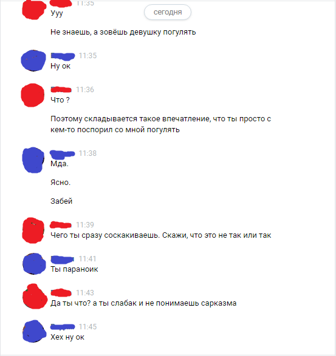
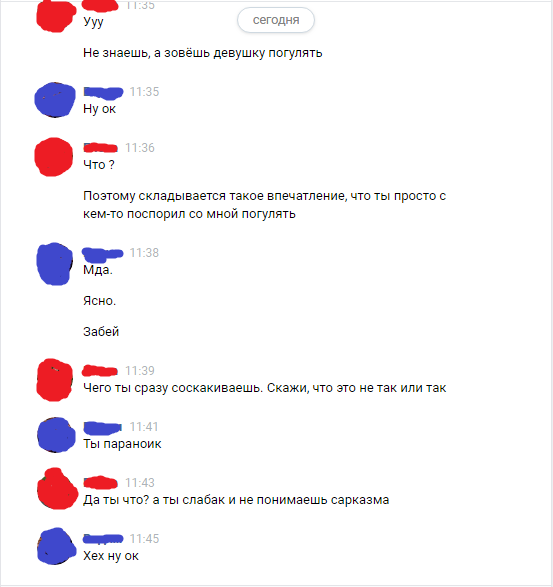
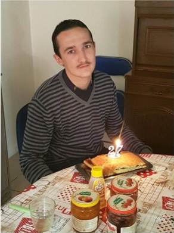

Бесплатно поясняю по хардкору и даю первые пришедшие в голову советы о тнях и отношениях. Возможно, кому-то пригодится. 30+летний хуй, почти всегда был с тнями, сейчас в оче длительных отношениях с лампоняшей, в прошлых тредах писал, что недавно “сделал придлаженье”, кек
Прежде чем писать в тред - прочитайте все ФАКи в его шапке. Рекомендую также прочитать всем неспокойным анонам лет 16-19 вот эту статью: http://goo.gl/Jj3bwv
Суть треда - это шапка+платформа для компетентных советчиков, которых тут, к моей радости, хватает. ТРЕД ПРЕДНАЗНАЧЕН ТОЛЬКО ДЛЯ ЖЕЛАЮЩИХ ОВЛАДЕТЬ ОПРЕДЕЛЕННЫМИ ТЕХНИКАМИ ИЛИ ПОЛУЧИТЬ ПИНОК В НУЖНОМ НАПРАВЛЕНИИ. Желающие поспорить в стиле «продайте мне ваш пекаб, докажите что я могу поябаться» - вам строго нахуй. Также игнорируем инцелов с инцелоаргументами, бесноватых внешкарешателей и всёбессмысленников. Эти черви даже хуже рангоеба.
Скрытые Сексуальные Сигналы, или как понять, что тян вами заинтересовалась, если вы ебаклак (краткое изложение книжки для реквестировавших сие анонами с социальными затруднениями)
Мне трудно заапрувить нижеизложенное, так как хотя я встречал ирл почти все эти сигналы, тем не менее, всегда думал скорее о том, понравилась ли тня МНЕ и предпочитал прямой незамысловатый подход с быстрым штурмом. Но вероятно это будет для кого-то полезным. – ОП
https://pastebin.com/rg6BHqqq
ПЕРЕПИСКИ-ПЕРЕПИСОЧКИ


Переписка как основной метод коммуникации с тнями подходит как для интровертов, так и для полностью отмороженных. Не менее 50% общения сейчас осуществляется не посредством звонков, а пальчиками. Этот метод может работать как на вас, так и против – вы можете спокойно обдумать свои реплики, но при этом отсекаете от общения 90% вашей личности – ваш голос, лицо и его выражение, шмот, запах, язык тела, поэтому нужно определиться, что является вашими сильными сторонами и делать упор соответственно. Все нижеизложенное может показаться тупизной или толстотой, но прежде чем захлебываться от баттхерта, попробуйте все это на практике.
Важно железно знать цель конкретной переписки. Цели бывают следующими:
- Непосредственно инициация знакомства на СЗ/вкудахте и т.д. с быстрым переходом в реал
- Поддержание заинтересованности текущей тян, создание лампоты
- Укрепление своей позиции после неидеально выполненного стреляния номера ирл
- Хардкорное реагирование на пинги бывших тней, если хочется заново натянуть их на кукан
Вместо этого Славики не имеют явно осознаваемой цели, воображая что-то типа: «Буду просто понаписывать день за днем на тему как сама/как твой день/ммм ясн)), в результате чего свидание как-то запилится САМО.»
Общие принципы
- Лет до 35 самый статистически выгодный стиль поведения, что в переписке, что ирл – это классический «Дерзкий, веселый и уверенный».
- Для выработки скилла переписок и уверенности строчите одновременно не менее, чем пяти тням, а лучше больше. Скилл прокачается быстрее, сможете к тому же фильтровать негодных тней в процессе и избавиться от вируса ЕОТизма.
- Важно самому получать от процесса удовольствие и лулзы, при этом поддерживая постоянный сексуальный подтекст. Клоунировать не нужно, но если юмор – ваша сильная сторона, то это поможет добраться до писечки в сжатые сроки.
- Время от времени тни будут переставать отвечать по разным причинам, в основном ебанутым. Худшее, что вы можете сделать – проявить себя Нуждающимся и Нервным Славиком – повторять свое последнее сообщение, а то и вовсе начинать психовать: я думал мы панравились другдругу магла бы и сказать если чьтото нитак!! Здесь нужно зеркалить и игнорить самому, пропав на время. Если вам прям невтерпеж вытащить конкретно эту тню, через несколько дней можете начать общение ЗАНОВО, не возвращаясь к старой оборванной теме, например, прислав смешную картинку/мем и т.п. Учтите, что определенный процент тней и вовсе не собирается вытаскиваться на свиданки, а будет просто заваливать вас всякой ненужной инфой типа «как я провела день», подсознательно стремясь таки раскрутить вас на внимание/одобрение. Жесткое правило для полных ретардов: она проигнорила три ваших мессаги/приглашения куда-то – ГЕЙМОВЕР.
- Не будьте чрезмерно пиздливыми. Объяснять, что ты имел в виду/хотел, почему вдруг сделал то или сё, внезапно сдавать назад – всё это Славики. Постоянно двигайтесь к цели!
- Написывать тне сразу после напряжно прошедшего свидания – значит искать ее одобрения. Если хотите понять, понравилось ли свидание тне, выждите немного – если тян осталась на позитиве, почти всегда в скором времени она сама что-то напишет вам.
- Писать «хаха» и т.п. бесплатное одобрение в ответ на хуевенькие попытки тни в юмор в тухнущей переписке – значит рыть самому себе могилку.
- Если тян сливается со свидания в последний момент под неким правдоподобным предлогом (внезапная смена на работе, защита курсача и тд), но НЕ предложив альтернативный вариант места-времени – ваше дело НЕОЧ. Лучший вариант – не отвечая, пропасть на 2-3 дня и смотреть на реакцию. По результатам можно всплыть и попробовать заново пошевелить тню, но шанс успеха будет в районе 5-10% (но если вы активно пекабите, даже 10% может означать пяток новых тней в год). Если же тян сама активно предлагает новую дату-время – это хороший признак. Если все же внезапно поняли, что заинтересованность в вас ничтожна – сразу сливайтесь, не тратьте время.
Есть два основных стратегических подхода к переписке:
«Лермонтов с шишкой» - Изысканные, остроумные, продуманные и сравнительно длинные реплики с шутеечками, подколочками и твистами. Риск здесь в том, что при этом вы какбэ играете по правилам тни, развлекаете ее в процессе, что а) ОЧЕ сильно балансирует на грани бетковости, б) нужно быть довольно умным и смекалистым в) есть риск перестараться и занизить свою значимость до «Ну ты слишком хороший)))» Алсо, не будем забывать, что ирл Лермонтов был толстым лысеющим омеганом, кек.
Этот стиль подходит для умных интровертов. Не забываем тонко внедрять сексуальный подтекст.
«Альфач 30 см». Краткий, телеграфный, отстраненный стиль переписки, желательно, без знаков препинания и смайлов. В идеале – не более 3-5 твоих реплик в течение одной переписки и не более 3 переписок до встречи ирл. Ваши реплики должны быть в разы короче тянских. Минимум эмоций, не тратить время на хуйню. Хороший тест на излишнюю эмоциональность/слюнявость ваших реплик – представить, будете ли вы чувствовать неловкость, если эту переписку показать, например, по федеральному ТВ. Здесь есть риск переборщить с «альфачизмом» - то есть продемонстрировать тне недоступность либо полную незаинтересованность. Стиль «Альфач» особенно хорошо работает, если есть значительная реальная (или воображаемая) разница между «уровнями» тебя и тни. Этот стиль сложен для освоения сычам и Славикам.
Толстый пример этого стиля:
Ты: (ничего)
Она: Ты тут?? Давно мне не писал...
Ты: привет, чо как?
Она: Та ночь была просто невероятной, меня до сих пор бросает в дрожь... ты там думал обо мне?
Ты: мальца
Она: Мм уже соскучилась по тебе! (смайлы поцелуев)
Ты: (ничего) или «м»
Я в свое время с успехом использовал оба эти подхода.
ПЕРЕПИСКИ-ПЕРЕПИСОЧКИ-2 Тактические приемы:
.jpg)
.jpg)
«Странное слово». Внезапная отправка короткой странной несвязанной ни с чем фразы или слова, получив которое тян будет гадать о его значении, или же о том, не предназначалось ли (уииии!) это другой тян. Ожидаемый эффект – быстрый ответ уже несколько взбудораженной тни, после чего вы начинаете общение, как ни в чем не бывало, игнорируя прямые вопросы. Этот прием годится для случаев, когда вы не хотите быть «непосредственным» инициатором общения. Примеры:
- скоро буду
- увидимся там
- ого!
«Подслушанная реплика» Адванснутый вариант первого приема, когда прямо подразумевается, что сообщение предназначалось не этой тне. Составьте его так, чтобы какбе подчеркнуть свою социальную значимость. Но выкручиваться потом придется изощреннее. Пример: мм захвати ништяки я принесу вино будет угар
«Дразнение» и «Рефрейминг» Пример:
Она: Ты так меня сегодня завел... Оч хочу снова увидеть тебя
Она: Можно кое-что спросить?
Ты: Полные 19 см
Она: Лол) Ты сейчас с кем-нибудь еще встречаешься?
Ты: только с твоей сестрой
Она: То есть нет?
Ты: Лол, с чего вдруг такие вопросы? Ты прям как моя жена. Но она сейчас в отпуске.
Она: Хех) Какие планы на выходные?
Обратите внимание, что автор не перебарщивает с альфачизмом, когда тня настойчиво пытается пролезть червем сквозь йоба-ответы «альфача», он делает рефрейминг, после которого следует толстая шутеечка. Никаких блеющих бета-оправданий или оборонительного поведения. Проверочки подобного рода тян может выдавать, когда ей от вас сносит башню слишком сильно, она не привыкла к такому, будучи окружена обычнокунами, и подсознательно стремится вернуть контроль над ситуацией.
«Внезапные пинги Бывшей» и «Сверхкраткий йоба-альфачизм» Если вы хоть каплю ценнее говна, кек, на каком-то этапе вашей жизни ваши Бывшие будут всплывать и пинговать ваше наличие. Их цели почти всегда одни и те же – удостовериться, что вы все еще Эмоционируете в их адрес, подпитать чсв, получить бесплатное внимание и довольно скрыться в закате. Худшее, что можно тут сделать – это начать с ними общение с Аборванного Мамента, постепенно повышая накал упреков и своих истеричных бугуртов. Но влечение тел, эмоциональные якоря-то еще не совсем угасли у ОБОИХ, и поэтому именно тут годятся самые отмороженные, самые хладнокровные йоба-реплики, которые бьют по мозгам тни, как колотушка по рыбе.
Пример А «Ностальгическая бывшая»:
Она: Я скучаю по тебе...
Ты: ну еще бы
Она: А ты по мне скучал?..
Ты: а по чему ты скучаешь больше всего? **(отражение ее выпада и рефрейминг)**
Она: Нам бывало оч весело вдвоем...
Ты: а знаешь по чему я скучал больше всего?
Она: Нет, по чему??
Ты: по твоим большим сиськам
(Это предел альфаческого разогрева, который стоит применять с Ностальгирующей Бывшей, есть риск пережестить. Далее следует сразу резко снизить накал, вспомнить Рамантичную Падробнасть и на этой нотке вытаскивать ее на встречу, возбуждать по старой памяти и трахать)
Пример Б «Агрессивно Ностальгирующая бывшая».
Почти то же самое, только в этом случае тян вылезла спустя время, чтобы почесать свою эмоциональность и попутно доказать вам, что Вы Говно/Она Жертва, которой Нидадали/еще что-то. Здесь, если вы задетектировали, что ваша значимость у нее не нулевая еще (а иначе она бы не вылезла вам Даказывать), то стоит хуярить и жестить по полной, самые отмороженные подъебки будут в кассу. Предельно краткие, похуистические реплики могут проканать неожиданно годно:
Она: (стена текста с бугуртами, упреками, отсылками к прошлым ситуациям)
Ты: захвати вино*
(Всё, что она, охуев, напишет СРАЗУ после этого – нордически игнорируем полностью, 0 реакции, держим паузу. Шанс того, что она в итоге примчится к вам в ночи с вином - исчисляется двузначным числом, кек).
Еще вариант:
*Она: (стена текста, суть – да я после тебя пришла к успеху, зарабатываю, хожу в зал, накачала шикарную жопу!)
Ты: приезжай проверим
Тня сливается с встречи под каким-то предлогом/Несет неприятную или дерзкую хуиту Неплохо работает комбинация кратчайшего оценочного слова и жесткий игнор в течение некоторого времени. Главное – не казаться бугуртливым, а скорее похуистично-игривым.
Она: Извени сегодня не получиться кошка рожает!!)))))))
Ты: лол/шта/пха/бред
Вариант для тех, кому за 30:
Ты: и?/нет
Негхиты-негхитики и прочий вербальный отлуп (читать подробнее в пекаберских источниках)
Ты: Привет, эт я, Васян
Она: Васян? Какой именно Васян?)
Ты: Лол, у тебя правда так часто парни просят номер?
Тян шлет любую рандомную чушь с мессиджем «шли мне внимание и расспрашивай о подробностях»)
Она: Собираюсь с подружками в тур по Европе этой осенью, составили кучу планов, мм
Ты: Окном не ошиблась, это мне чоле?
Она Да!! (вызов любых эмоций вам в плюс)
Краткое руководство для ретардов по вытаскиванию тян на первое свидание
 
 
Не тупите с вытягиванием тни в реал. Местные ананасы тут могут месяцами (!) написывать тне «как прошел твой день, молю». Есть легкая заинтересованность тни – сразу тащите в реал и там уж жгите вовсю.
Первичная инициатива на 100% должна быть вашей, как и идеи. Никаких «мм а куда ты сама хочеш??» Никаких вопросов исподтишка «а тибе нравица ходить в кино?» Никакой передачи ответственности тянке на этом этапе. Варианты:
- Легкое игривое приглашение: «Погнали на выставку вина и сыра в четверг» (хорошо канает, если тян явно заинтересована)
- Приглашение с демонстрацией что вы такой дохуя занятой и активный персонаж: «Я в четверг иду на выставку маринованных хуёв, айда со мной».
Важно поймать здесь нужный настрой: вы не просите тянку пойти с вами на свидание, вы просто даете ей возможность приятно и интересно провести время. Никаких просьб, пиздализаний, поддуваний на этом этапе. Обратите внимание, что в этих примерах собственно приглашение оформлено в виде «команды», а не вопроса, заискивания или мольбы.
Первое свидание хорошо назначать в будний день – оно получается менее обязывающим, плюс можно многозначительно дать понять, что на выходных ты часто занят, кек.
Первое свидание нужно проводить там, где вы сможете в ламповой обстановке узнать друг друга без посторонних. Никаких кино, вписонов и концертов, оставьте эти развлечения на после впендюривания уже.
Некоторые тян для вызова на свиданку требуют легкого прожима. Пример:
-Маруся, пошли гулять
-не знаю)
-**Ну а я знаю** :) в четверг на Ленинских горах
-Ммм подумаю
-**Зачем думать когда я есть?** =) Прихвати пледик
-Оййй.... Ну ладно, но в четверг никак(((
(Берем небольшую паузу, ждём когда трусняки высушит и свой варик предложит)
-эй, ты ещё здесь?
-Угу, но мне скоро пора по делам. Что хотела?
-Давай в пятницу) После 7 освобожусь
Можно сразу написать “Ой мне пора уже уходить” когда заебёт своими отмазками и водой, это всегда даёт им толчок. Если она заинтересована в тебе.(с) анон-неоп
Рабочий шаблон для работающих в стиле Ыыть-куна
-Маня, здравствуй. Отличный жопец на фотках
-Ну спасибо)
-Фотографом работаешь?
-Ну там да... бывает)
-Погнали завтра в сквер на Третьем Хуёвом переулке, там расскажешь подробнее
-Так сразу?)
-Конешно. Диктуй намбер
-8-800-555-3535
Рабочий шаблон для работающих в стиле «Добрый мамин бетка»:
- привет тяннейм
- привет
- давно тем-то увлекаешься?
- да, 4 года трясу патлами под ее рок
- хах, а по тебе и не скажешь) аниме любишь тоже?
- даа, смотрела такие-то тайтлы, манга про ебушка воробушка очень понравилось, аж плакала на месте, где сатоши обвалился
- оо круто, помню это отлично, а еще люблю то-то и...
еще немного трепа об интересах по желанию
- тяннейм, а что делаешь на выходных/сейчас/завтра/какие планы на день Х?
- ой не знаю, наверно свободна, а что?
- давай прогуляемся тогда, там-то часа в 2
- ойй ну подумаю
- да что там думать, пообщаемся вживую, чаю или кофе попьем, что тебе больше нравится?
- ну наверно кофе
- окей, давай твой номер запишу для связи
- +495843647658, кинешь вызов окей
- хорошо
Резюме. Многие тни при вытаскивании на свиданку будут ссаться, увиливать, писать хуйню. Следует учиться отличать это от явной незаинтересованности в свидании с вами. Ваши основные приемы здесь будут:
- Настойчивость
- Дерзкие пробивные фразочки
- Троллинг
- Игнор
Годная тян, если заинтересована в вас, сама предложит время-место, когда действительно не может. Не волочитесь, блджад, за тнями, которые от вас морозятся и явно видно, что вы им не интересны. Хрестоматийная тухлая переписка на пике 1.
Разбор полетов на пике 2 или Как не Надо Куча ошибок:
- передача ответственности на тян
- спрашиваешь, делая ее главной
- слишком занудный слащавый многобуквенный
- после отказа - сразу сопли ЧОМУ ЗАЩО
- открытая покупка, т.е. опускаешь ее статус до уровня “шлюха”
- начинаешь с комплимента. т.е занихуя ей даешь поддув,
- без ебли готов поддувать, т.е. прямой путь в френдзону (с) анон
На пиках 3 и 4 – пример как за пять минут можно эпично обосраться в переписке, моментально слив инициативу и выставив себя одновременно туповатым, немужественным и жадным.
Подкаты ИРЛ или нырнем-ка в омут теорий пекаба - для тех, кто хочет задрочить тему
(Но анон напоминает - расслабьтесь и ебашьте скорее как в покере, прежде всего на долгую дистанцию, и получайте удовольствие от самого процесса.)
- Кун привлекает тней тем, что его внутреннее состояние (т.н. фрейм) сильнее, чем у них (например, стабильней, устойчивей к внешнему воздействию и т.д.). Тян скорее даст среднекуну с сильным фреймом, чем красивому-куну мямле. Так что никаких, блеадь, «похожу годик в зал и уж тогда ух начну!»
- Сильный фрейм проявляется в уверенности во ВСЕМ, что ты делаешь, и спокойном, расслабленном отношении к социальному давлению. В жизни женщин мало уверенности и спокойства, поэтому они неосознанно стремятся получить это от кунов – как собака на прогулке стремится обваляться в чужом говне, но не абы каком, а в кажущемся ей по каким-то причинам илитным, кек.
- Сам тот факт, что вы подкатили к тне ирл, уже говорит в вашу пользу, прибавляя очки уверенности и социальной ценности. Демонстрируйте, что вы уверены и расслаблены в самой ситуации подката (для этого анонам итт потребуется массированный налёт подкаточасов).
- Чем красивее тян, тем сильнее во время вашего «холодного» подката она начнет тестировать устойчивость вашего фрейма. Для неопытных анонов все эти проверочки кажутся чем-то вроде анальной пытки. Но в конечном итоге именно фрейм тян должен «прогнуться» под вами, когда вы пройдете эти первичные проверки.
- Видам проверок несть числа, про них написаны книги. Суть вашей реакции на них – настойчивость и уверенность. Даже если тян хардкорно игнорирует вас первые секунд 30 – улыбайтесь и продолжайте говорить, блджад. Вскоре она начнет вам отвечать, затем смеяться над шуткой про собаку и деда и вот вы уже едете ебаться на вашем проперженном диване. В этой игре побеждает терпеливый и настойчивый.
- Внутренний настрой: «я – всё, что нужно этой тне сейчас». Иррациональная самоуверенность. Забудьте всю хуйню про альфачей. Если вы держите свой фрейм, прошли проверки тни и можете увести ее куда-то под мало-мальски правдоподобным предлогом – нужно очень постараться, чтобы проебать такие шансы на секс (впрочем, уверен, что аноны проябывали и не такое, кек)
- Тни могут вести себя как сучки при подкате, но не из-за феминизмов, а из-за биологических механизмов – ну вот надо ей убедиться, что ваше внутреннее состояние сильнее и все тут, блджад. Вы же не хотели бы, чтобы ваша потенциальная тян сосала все хуи, которые ей только сказали «привет»? инбифо хотели бы, кек
- Активные проверочки (ты милый но/у меня есть паринь/давай дружить) – а) прием «Согласие и абсурдное усиление» б) Полностью пропускать мимо ушей и действовать дальше. Подробнее расписаны в пекаб-литературе. Есть мнение, что активные проверочки – признак заинтересованности.
- Пассивные проверочки – посложнее (сучье лицо/односложные ответы/гримаса отвращения и убегание и т.п.). 99% кунов сочтут такую рекцию однозначным отказом и свалят, но у красивых тней (от 7,5 и выше) гораздо чаще, чем можно себе представить, это ТОЖЕ все еще проверочки. Кстати, это может быть одной из причин, почему иногда топовых няш ебут быдлогопники – те просто не обладают рефлексией, чтобы потерять инициативу от даже самых брутальных проверочек, в итоге оказываются единственными, кто способен их пройти и тне «приходится» ебаться с ними, лул.
- Причиной всех этих брутальных проверочек может быть слабый фрейм и нервозность тни. Сейчас добрых 90% кунов НЕ способны на подкат ирл. Поэтому ваш даже просто приемлемо состряпанный подкат ВНЕЗАПНО сообщает тне о вашей ценности, она впадает внутри в панику и начинает заваливать вас своей биологической программой на автокасте – т.е. проверочками. Плюс, тня может быть такой же сыч как и вы и банально не сообразить, что нужно вам сказать. Настойчивость и расслабленность во все поля! Устойчивый контакт глаз, улыбка и пиздите, пиздите. Имейте в активе домашние заготовки на хардкорно сучьи выпады, изучите тему негхитов, дразнений и подъебочек. Учтите, что если вы прошли все жосские проверочки – вы ДИЧАЙШЕ выделитесь на фоне обычно роящихся вокруг тни пиздализов.
- Если в условиях клуба/вечеринки/тусы тян мямлит «Было приятно познакомиться»/«Иди к своим друзьям» и т.п. – улыбайтесь и игнорируйте. Она сама может уйти, если хочет, а если не уебывает – это еще один тест вашей настойчивости.
- Если в условиях клуба/вечеринки/тусы сначала всё вроде было на мази, но тян по какой-то причине съебала, спустя n времени найдите ее в толпе и подкатите снова. Тни тоже могут паниковать, если всё идет слишком хорошо и пися почему-то вспотела, кек. Повторный подкат даст вам прирост в добрых 50% эффективности.
РАЗДЕЛ ДЛЯ ОМЕГАНОВ И ЛИСТВЫ
 
Омеганам нужно тупо брать себя в руки и ебошить, других вариантов особо нет. В шапке содержатся почти вся нужная информация: и как на сайт знакомств вылезти, и как стараться не омежить и тупить, разве что ДОСЛОВНО им не расписаны гайды по общению и куда хуец втыкать, кек.
Отдельные горячие головы утверждали, что эта инфа для омеганов слишком НАРМАЛЬНАЯ, им-де нужны свои, ламповые треды. Любые специализированные омеганские треды моментально превратятся в феерическое шоу, где собравшиеся в кучу омеганы придут к консенсусу:
- Делать что-либо бессмысленно, ебутся только избранные
- Дают только Брэдам Питтам
- Дайте мне пруфы, что я могу поябаться
На мой взгляд, шансы чему-то научиться у омеганов будут только если они будут тереться среди мало-мальски нормальных людей, т.е. например в рамках данного треда, кек, все остальное будет окукливанием и самотереблением. Алсо, может показаться, что я будто бы на стороне омеганов, за них - хуй там, я так же презираю пассивных нытиков, как и все, просто я одержим надыдеей, что все вожделеющие тню должны мочь ее заполучить.
Несколько замечаний для омеганов:
- Избегайте во время разговора наклоняться вперед К тне, при знакомстве, на свидании или еще где – моментально при этом транслируете сигнал «Отчаянно нуждаюсь в пизденке, готов служить». Наклоняться стоит только для того, чтобы поцеловать, например, в шею или прошептать что-нибудь ебанутое на ухо, кек.
- Подготовьте 2-3 морозные былины про ситуации, где вы демонстрируете какие-то свои годные качества на фоне других людей, добавьте фантазии. Запускайте их в нужный момент нехитрым образом: «О, вспомнил как…»
- Избегайте спрашивать разрешения у тни,типа «можно тебя приобнять», «можно пацыловать» - просто делайте и смотрите на реакцию, лул.
- Учитесь отвечать на вопросы не прямо, а с юмором, уклончиво или дерзко.
- Не держите руки в карманах на свидании
- Ваше слабое место – риск показаться занудным, скучным, неуверенным, немужественным. Прорабатывайте это как хотите, блядь.
- Начните пробовать знакомиться онлайн-способами. Сейчас есть паблики вкудахте что-то типа «Знакомства хикк и домоседов городнейм», шанс найти там подпледную стесняшу ненулевой.
- Если вы 100% социальный ретард, морально готовьтесь к долгой борьбе с самим собой. Реалистичные цифры – СОТНИ подкатов офлайн и онлайн способами, десятки проведенных свиданий, их анализ, выводы и адаптация поведения. Именно тут отсеются 2/3 настоящих омеганов, представляющих собой нежизнеспособный негибкий биомусор. Они не нужны.
Нецелованным терять нечего (кроме своей листвы), поэтому бросайтесь в любые омуты с головой
То, что подрывает ваш успех на корню - это надумывать себе всякую хуйню про себя и тян, пока не вдул ей. Читал это во всех 70 тредах, блджад. Вообще не думай ни о чем в условиях недостаточной информации: действуй, действуй, действуй. Гони мысли типа “а что подумает тян обо мне”. Неуклюже позвать тян на свидание в сто раз лучше, чем ничего не сделать.
- В: То есть весь этот ваш “съём” - это просто брутфорс, пока не останется тян, которая согласится на свидание? Блять, ну и где тут рост какой-либо?
- О: Футбольная команда топового уровня ударяет по воротам соперника раз 30 за матч, 10-11 раз попадает в створ, забивает 2 гола, и выигрывает. Понял, не?
В: Вообще не понимаю, что делать после знакомства с тян, вот такой вот я.
О: Хуй знает откуда берется такой аутизм. Пилите же классическую “трехсвиданку”:
- Познакомился, взял номер телефона.
- Вызвонил на свидание, провел его лампово. По итогу завершил поцелуем.
- Второе свидание. Наращиваешь прикосновения, поцелуи, смотришь на реакцию.
- Третье свидание, максимум лампоты и ласк, на пике - везешь к себе и трахаешь.
- С этого момента начинаются либо не начинаются отношения. (+в зависимости от твоей смелости и ситуации кол-во свиданий может увеличиваться либо уменьшаться)
Альтернативная схема «Притворяемся нормисом»:
«вместе ходили на сошиал денс, общался как со всеми.
прикинул, вроде у неё никого нет, девка сочная, сиськи опять же.
после танцев стал провожать типа "поболтать до метро"
потом после дискотеки "пошли погуляем" - согласилась
взял за руку - не выдернула
завёл в красивое место обнял и поцеловал - ответила на поцелуй
всё эти три фактора говорят о том что она готова к сексу с тобой
если после секса она хочет с тобой продолжать встречаться - она готова к отношалкам с тобой
собсна всё»
- В: Не понимаю, как как предлагать эти ваши отношения!
- О: Ебта, ты юрист с контрактом что ли? Отношения не предлагают, начинаешь общаться с тней, создаешь лампоту, на пике лампоты ее совращаешь и отношения начинаются сами собой после секса (либо нет).
- В: Скоро грядет первый секс, но я ссу проявить инициативу. Как поступать так, чтобы на следующий день тян подумала, что сама инициировала все это.
- О: А вот тут хуюшки, тни ответственность на себя за секс брать не любят. Тебе придется самому в какой-то момент проявлять инициативу, кек, принять решение и начать активные действия.
Если тян зовет к себе/едет к тебе=готова ебаться. Может, перестанете задавать тупые вопросы вроде “няшил тянку в кровати, она вся текла, двач как ее развести на еблю?”
«Одна из ваших проблем в том что вы боитесь и ждете инициативы от тней. Это не аниме, так не будет.»
«Нытики ебаные, тян это не мамка, чтобы любить тебя несмотря ни на что. Если хочешь годную тян, то сам не будь хуйлом для начала. Я тысячу раз видел все эти истории написанные предельно однобоко (МНЕ недодали, Я недополучил), если копнуть, то окажется, что анон бесцельный, ничем не интересующийся ебан с обидой на весь мир, который ведёт себя как тряпка и хочет няшиться под пледиком и чтобы его любили. Схуяли вы решили, что вам всё это полагается по умолчанию?» (с) аноны
РАЗДЕЛ ДЛЯ ОБЫЧНОКУНОВ

Обычнокуны, как правило, воспитаны в стиле «женщины – это чистые ангельские создания, которым нравятся Хорошие Парни». Такой стиль мышления был вполне себе эффективен и актуален где-то до 60-х годов, но в современных городских джунглях это скорее путь к сильнейшему когнитивному диссонансу и полному эмоциональному перегоранию к 30 годам.
«Одна из основных ошибок обычно-кунов и тем более лайт-всратанов - желание «добиться» именно ту тян, которой на тебя полностью похуй. Более смекалистые же граждане давно просекли, да и написано об этом немало, что подкатывать яйцы надо туда, где заметна хоть какая-то симпатия. Так и бьются долбоебы всю жизнь как рыба об лед.»(с)анон
Дисклеймер – отношения у вас начинаются ПОСЛЕ секса, до этого – между вами нечто иное, что бы вы себе там ни фантазировали, кек
Как вы заебали с этими вашими отношениями! Поймите, дебилы, нет отношений без ебли. То, что вы думаете, является отношениями - это дружба между мальчиком и девочкой. Дружба с определенным процентом интимности, но все же дружба. Которую тян с радостью променяет на еблю с тем, кто будет способен ее выебать. Это беспезды приятно, когда ты кому-то нужен, когда кто-то тратит свое время и ресурсы на тебя, но все это не стоит и огрызка ногтя, если не подкреплено обоюдными оргазмами.(с) анон
Мини-гайд по отношениям обычнокунов-1
Главная ошибка беток - в том, что они воспринимают женщин слишком серьезно, будто бы это такой же человек, просто с другим устройством гениталий, до которого можно достучаться при помощи логических доводов. В 90% случаев это не так. Чтобы тянка что-то поняла и усвоила, работать нужно не с тем, что она говорит, не с ее мыслями, а с ее чювствами. Не спорю, есть примерно 10% низкопримативных тней с развитым аналитическим аппаратом, увы, половина из них неебабельна, а у второй половины ЗАПРОСЫ. Вывод: с тней нужно не спорить, а создавать у нее нужное чувство. Не воспринимайте тян слишком серьезно. Играйте с ними.
- Для тян истина - то, что она чувствует или хочет. Со своими логическими аргументами и доводами можете проследовать нахуй. В большинстве случаев нужно работать с эмоциями. Именно тут кроется основная засада для мамкиных циников, с дивана рассуждающих о том, как должен быть устроен мир с точки зрения логики.
- Почти никакая тян на самом деле не хочет тихой, спокойной жизни. Так или иначе придется либо научиться обеспечивать тне контраст эмоций и руководить драмами (в т.ч. создавать их искусственно, когда сигнальные лампочки показывают, что тне уже нужно), либо терпеть и страдать, кек.
- Почти любая тян может оправдать (рационализировать) для себя всё что угодно, любой поступок, и почти не чувствовать потом никакого раскаяния, максимум - бугурт, что засекли/прилюдно спалили. Это нужно вспоминать, если появляются мысли типа “Ну как она могла”.
Многие куны считают, что в отношениях есть что-то типа экселевского файла, в котором учитывается все то, что они делали ранее для тней. Хуйтам, почти все тни живут настоящим моментом, если, например, она взбесилась, то она бесится СЕЙЧАС, а то, что вы вдвоем полчаса назад ворковали в ламповом ресторанчике, где она получила Мишку и Букет (тм) – уже неебет.
В отличие от того, что тни утверждают сами, их любовная жизнь кажется им полной и насыщенной тогда, когда они “бегают” за кунами, а не наоборот. Противоречивые сигналы, опасность, дразнение, причины для ревности, которые однако не подтверждаются - это ваше всё. Иногда стоит пропасть на денек, выключив телефон, и т.п. Интенсивность таких игрищ зависит от вашей значимости и чувствительности тни. Палку перегибать нельзя.
В отличие от быстрого соблазнения, в долговременных отношениях необходимо проявлять примерно 70% бета-качеств и 30% альфа-качеств. На одном альфачизме прочных отношений не построить. Если вы такой охуенный звероальфач, то стоит иметь в виду, что в большинстве случаев от таких как вы тяны уходит к беткам.
Потребности тни (любого рода) стоит удовлетворять собой на 2/3, чтобы ей чуть-чуть не хватало. Время от времени выдавайте ей по полной.
Время от времени любая тня устраивает проверки-проверочки или просто начинает ныть. В этом случае используйте метод “Согласие и абсурдное усиление”, а-ля:
- Ты все время опа-аздываешь!
- Еще бы, попробовала б ты эсэмэсить десятку своих любовниц! (пример тупой, но идея понятна)
ОП
Мини-гайд по отношениям обычнокунов-2
Парадоксально, но счастье тни обратно пропорционально усилиям по удовлетворению ее хотелок. Чем интенсивнее удовлетворяются ее хотелки, тем более иррациональными они станут в будущем. Желаемый вами эффект от удовлетворения ее хотелок действует лишь время от времени и не долго. «Золотой коэффициент» -как уже сказал, давать тне 2/3 того, что она дает вам: звонков, внимания, реплик, подарков и т.д.
Если тян счастлива, она будет следовать за вами, а не наоборот.
Ваш наихудший враг в отношениях – привычка и рутина: все люди в той или иной степени склонны выбирать пути наименьшего сопротивления. Время от времени поступайте непредсказуемым для тни образом.
В любых сомнительных отношенческих ситуациях не так важно, что тян говорит/говорила/говорят окружающие/что вы там себе сами надумали. Один из самых годных «маркеров» – состыковка вашего хуйца и ее писечки (а также частота этого и свободность доступа). Все накрученное вокруг этого – шум и помехи. Почти всегда, если начались сильные заебы или проблемы, ограничивается либо прекращается доступ к ваджайне.
Любыми путями избегайте роли пиздолиза-полуухажера, который годами трется вокруг тни и надеется на внезапную атаку из френдзоны а-ля rogue.
Писечка и сердце тни будут «знать», что она вас сливает за несколько месяцев до того, как она это сформулирует для себя и озвучит для вас. Обращайте внимание на мелкие признаки.
Куны хотят, чтобы их тни их заводили, тни же хотят гордиться своими кунами (чсв+биология).
Спонтанные и мелкие романтические жесты значат гораздо больше, чем продуманные и крупные.
Если тня (старше 20, скажем), сигнализирует, что не любит сосать или секс вообще, съябывайте в ту же минуту. Ваше либидо – слишком ценная вещь, чтобы тратить его на подобную тян.
Никогда не женитесь (кек) на тян, ориентированных на фан, тусовки и вписки. Эти тни хороши только для ебли на 16-22 лвл.
Избегайте прямых ответов на провокационные вопросы тни, иначе горе вам! Уклоняйтесь, дразните, сбивайте с толку, вот это всё.
Сохраняйте невозмутимое спокойствие, железобетонную уверенность в своих действиях и не бойтесь потерять тян - этот страх губителен.
Максимизируйте свои сильные стороны, минимизируйте свои слабости.
Ебите тян до усрачки, как будто это последний раз, экспериментируйте.
ОП
Годное введение в основы от НЕ-ОПА


Научись получать удовольствие от самого общения с тнями. Тогда все эти хуежопые хитровыебанные техники, и троллинг тянок, и игра, и модели поведения сами пойдут и будут естественно встраиваться в твоё поведение.
Без этого одного совета какими бы техниками-хуехниками ты ни пользовался, каким бы альфачём ни устраивал, всё пойдёт пиздой, потому что насквозь видно что ты пиздишь. Это со стороны тянки выглядит будто ты базарная бабка на рынке, которая пытается свою лажу впарить тебе, что ей похуй, лишь бы отхавать твоё бабло. Даже похуй кто так поступает: бабка, хач, какой-то студент на улице с флайерами, назойливый продавец-консультант в каком-нибудь самом кадатском суперпупергимермегамаркете, у тебя будет одна реакция, которую ты вряд ли произнесёшь вслух: отъебитесь вы все от меня, заебали, оставьте в покое. От вас, пиздострадальцы, от ваших действий, у тянки точно такая же защитная реакция вырабатывается, а вы ищете причину в чём-то ещё. Научитесь любить саму игру и тренировочный процесс, а не только результат и кубки, если вы спортсмен. Любите свой товар и своего клиента, а не только деньги, если вы предприниматель. И так далее. Любите само общение с тянкой, безотносительно того будет секс, дроп или троллинг кто кого перебесит. Самая крутая хуехника и главный настрой перед встречей с тянкой: сегодня мне будет круто, прикольно и весело, а не что бы такого сделать чтобы дала.
Большинство проблем недопикаперов это не неработающие или неправильно выбранные хуехники, не страхи подходов, не недостаток альфа качеств, а каргокультизм. Когда ньюфаг пытается применить какие-то хуехники, но при этом понятия не имеет как и почему оно работает. А надо, блядь, просто забить на всё и получать удовольствие. А потом уже искать ответы что хочет та или иная тянка. А можно не искать и их, тогда автоматом отсеятся тянки, с которыми у тебя мало общего, останутся только близкие по духу, среди которых легче всего и найти без кадатских плясок с бубном ту самую свою няшку. И расставания тоже переживать легче будет. И вообще куча проблем уйдёт.
Вместо этого в реальности с тянками что имеем:
- На каком свидании её целовать? - На каком хочешь.
- Она отстранилась/не хочет - Ну не целуй.
- Но она сочтёт меня тормозом - Тебе не похуй?
- Она вчера отказала, а сегодня зовёт на свиданку, я вообще в ауте, поясните её логику - Пох на её логику. Хочешь встречаться - встречаешься, нет - говоришь что у тебя нет желания. Прямо, в лоб, всю правду. Пусть она сама думает что с этим делать.
Всё, блядь, нет нужно раскачивать эмоции, придумывать хуежопые квесты, а потом охуевать почему получается так что маленький внезапный подарок круче большого запланированного. А вот потому и круче.
Нравится тянка - скажи ей это, не нравится - тоже скажи. приятно с ней - поблагодари, видишь что тебя нагло используют - предъяви ей это и скажи что тебя так не устраивает. Испытываешь дискомфорт - скажи ей что не знаешь почему но тебе с ней неуютно. Всё. Всё блядь, ты уже на 75% альфач.
Для тебя, ОП, то что я пишу - настолько естественно и очевидно, что ты даже не думаешь заострять на этом внимание. Для тебя очевидно что если тян послала тебя нахуй, то не стоит за ней ползать на коленях. Для многих - нет.
Поясняю как выглядит кумекалка омеги. Я хочу тян - я должен выполнить действия чтобы её получить. Ну логично показать что огна мне нравится. Вот цветы, подарки, бери всё. Как давай останемся друзьями?
Бля, что-то тут не так раз этот урод схватил её за жопу и увёл ебаться. Какие нужны правильные действия? Идём, читаем пикап. Ага, вот крутая хуехника, вот ещё, говорят что работает, ну попробуем. Нихуя не получилось. Пикап говно без целей, развод для лохов. ЯНИХУЯНЕПОНИМАЮ. А, я всратыш, омега и короткоствол. Ура, вот готовый ответ! Мне не дадут, ну буду ныть тогда. Альфачи просто везучие скотины. А бизнесмены все воры. А спортсмены на наркоте сидят вообще и нихуя они не крутые и не лучше меня ничем, просто мне не повезло.
Теперь яснее скажу. Омеги ищут готовый ответ и думать не хотят что и как. В чистом виде каргокультизм. Взять хуехнику соблазнения, применить её, получить хуёвый результат, обижаться на весь мир, мстить тянкам. Что за дичь? Но они так думают. Не умеют иначе. Они ищут простых решений. Пошёл в магазин - купил колбасу - сожрал. Тут думать не надо.
Первое просветление - это понять что никто никому ничего не должен. Ни тянки тебя, ни ты тянкам. Поэтому будь проще - получай удовольствие. И похуй правильно ли ты поступаешь с точки зрения Лесли, Мистери, Манкубиса, тебя, ОПа этого треда, или даже самого меня.
Второе - понимать что пекаб - это определённая наука, да ещё и игра с неполной информацией, примерно как покер. Ты нихуя не знаешь какие две карты у другого игрока. То что работает в одной ситуации может оказаться ОСНЕ хуёво в другой, но принять какое-то решение тебе всё равно надо.
Поэтому самое верное - быть естественным, собой, рубить правду, говорить что думаешь, не ссаться перед тян, посылать нахер тех, кто тебя напрягает. Нравится - веди с тянками как с друзьями мужского пола, нравится - веди себя с ними как будто это твои домашние питомцы, нравится - общайся просто на равных. Можно как угодно, лишь бы тебе доставляло. Ну разве что закон не нарушай. (С) АНОН
Продолжение введения в основы для аутистов от НЕ-ОПА


1. Куда вести тян, если на улице холодно, а в кармане нихуя нет (серьезно нихуя, до зарплаты бы дожить, а она только через неделю)?
В каждом крупном городе ежедневно проходят всякие мероприятия - рекламные кампании, акции, презентации, флешмобы и прочая хуета. Ищи в вк подобные ивенты, выбирай те которые нихуя не стоят и более-менее соответствуют вашим интересам - и вперед.
2. Я тормоз и протупил на первой свиданке взять тян за руку (думал это должно быть только на втором-третьем). Почитал тут, что все чуть ли не со старта за руки держаться и приуныл. Еще и попрощались как-то криво, просто “пока” - “пока” и она в автобус села.
Первое свидание - это просто пристрелка, смотрины так сказать. Если на первом свидании ты тню не зацепил, то абсолютно не играет роли кинестетил ты или нет. Трогать начинать надо как можно раньше, но если на первом свидании не трогал, а она согласилась встретиться еще раз - все хорошо.
На вторую свиданку сразу брать ее за руку и уже в конце можно чмокнуть в губы?
На втором свидании кинестетика должна быть максимальной. Трогай, целуй, мацай за сиськи, гладь клитор и тереби ональные губы. (для сцыкунов может это слишком быстрый темп – ОП)
3. Свиданка на концерте - это норм? Просто сам давно собирался, а тут она подвернулась и согласилась сходить главное.
Концерт - весьма специфичное мероприятия. Там легко наладить кинестетический контакт, но если нет цели выебать тню после концерта - вариант хуевый. Хороший концерт - это годный крышеснос: эффект массовой эйфории, охуенная энергетика. Если это конечно не коцерт сепультуры, хаха. Главно, чтобы поблизости не было никаких других знакомых, вы обязательно должны быть одни на этом мероприятии.
Я вообще первый раз на концерт и она тоже. Группа сильно романтическая, я вот думаю может там пососаться уже?
На концерте сосаться. После - ебать. Однозначно.
но как не проебать этот момент или наборот понять, что она не готова?
Очень просто понять - берешь и засасываешь! Если отстраняется - значит еще не готова. Можешь провести экспресс тест - посмотри ей в глаза несколько секунд, а потом предложи жвачку. Если берет - значит готова целоваться.
Вообще говорите, трехсвиданки - а я бы наоборот хотел потянуть с еблей, потому что пока морально и физически, лол, не готов, через месяц только буду (так вообще на съемной живу один и приводить можно в любое время по сути).
Ты уж определись, тебе шашечки или ехать? Это только в романтических фильмах тян готовы годами ждать одного единственного, в реале они похотливые, грязные, развратные животные, которые вряд ли будут ждать месяцами, пока ты их выебешь. Затупишь - окажешься во френдзоне. Без исключений. (с) анон
Нравица ЕОТ, хочу с ней отношения построить!
“Отношения” - твой самый ценный ресурс, нахуя стремиться кидаться им вот так сразу? Ты нихуя не знаешь эту тян лично, не ебав и не жив с ней, знаешь только ее публичный имидж, скорее. Тебе неведомы ни насколько ебуче будет ее соблазнить, ни насколько годно и раскованно она ебется, ни насколько она ебет мозги в перерывах между сексом, ни выражен ли у нее ПМС дико, ни ее взгляды на отношения и роли в них и т.д. Отходи от этого бетко-романтичных клише про ММ ПРИДЛАЖУ АТНАШЕНЬЯ, мужчине стоит ориентироваться на впендюривание, а отношения - это то, что вытягивает из него вместе с малафьей годная тян. - мнение ОПа-хуя
«Парни насчет отношений не должны загоняться вообще, и тем более строить их, это нонсенс. Это тянская, и только тянская роль - выбирать куна для отношений и строить оные. Когда парень начинает делать “тянскую” работу, это выглядит дико, нелепо, и ни к чему хорошему не приводит. А на деле полсексача пишут “двачик хачу атнашачек как быть бля сук где мая тяночка мимими((9999”. Еще думают на полном серьезе, что кун обязательно добивается тянки, предлагает встречаться, и прочую хуйню, и никак иначе. Подобная хуита появляется от абы какого воспитания и от медиа-сферы, те же мелодрамы и фильмы про любофф.»
Вопросы обычнокунов:


В: Как максимизировать количество контактов с тян, живя жизнью среднего анона?
О: Когда ты молод все иначе. Ну вот, допустим ты 25-лвл, у тебя типичная неделя - работка, тренировки, хобби гиковатое домашнее, да встреча с бородатым другом-нецелованным магом в баре два раза в месяц. Ну и где тут эта масса тней, из которой 20% с тобой пойдут на свидание, а половина из них дадут?
Ты в состоянии познакомиться с миловидной тёлочкой по пути к метро или выбирая овощи в магазе вечером? В том-то и дело, если ты уже не жил жизнью в которой женщины это её органичная часть, то обычная жизнь анона - это мужской монастырь с изучением школы вирджин-магии.
Я люто-бешено котирую комплексный подход. Тупо блядь все способы знакомства. На улице, в баре, в клубасике, прозондировать приятеля на наличие подруг у его тни, прогулки в парке, продавщицу в магазе - ну ты понял.
СЗ дополняет выборку - поставил баду, пролойсал всех, выбрал ответивших, правильно заобщался, получил номер. СЗ вообще отличная вещь, если правильно применять, а не как аноны в дейтинг-треде.
- В: Я молодой хуй, были оче сложные отношения, тян ебала моск, манипулировала, истерила. Еле смог дропнуть, спустя какое-то время она принялась клясться, что исправится, лишь бы только женился на ней. Я в смятении, хочу бежать к ней.
- О: Не исправится никогда, а после свадьбы огребешь втройне за ее такие-то унижения перед тобой. Нет никаких причин терпеть хуевые, не устраивающие отношения.
- В: Посоветуйте восемнадцатилетнему, как не стать волшебником. Просто недавно зафейлил последнюю возможность завести отношения, и больше знакомых тян не осталось.
- О: Еще один дурачок, знакомых тней разобрали, значит ФСИОО, познакомиться не судьба. Зато теперь очевидно, как образуют пары бета-самцы - вот так как-то прилепляются к какой-нибудь бабе из числа рандомно подсовываемых жизнью.
В: Тян обидилась на какую-то хуйню и закозлилась не на шутку. Ну я ее игнорю, чо дальше?
О: Если каким-то чудом напишет, то смотреть на контекст. Если просто скажет давай забудем и не ссориться, то ок, нечего зря дуться. Скорее всего тебе начнут навязывать чувство вины - вроде как “готовы принять извинения”, или “давай забудем, но и ты виноват или так не делай”. Чувствуешь? Дьявол в деталях. Тебе как бы позволяют исправить твою ошибку. Если такой тон - никак не реагируй, игнорируй. Если прямо открытая агрессия, то тем более не ведись. Ты ж сволочь, обидел девачку, так что не ведись.
Что будет если поведешься? Ну, съедешь на базаре, может начнете общаться, но твоя ценность понизится. Мужчина-тряпка и не мужчина вовсе, даже для лесбух. Будут тобой манипулировать, если покажешь своими действиями, что тебя можно.
Если доводить до обострения, то тебе придется вот так же скакать от срача до нормального общения. Зачем тебе такие тни с которыми не просто некомфортно, а приходится воевать? Старайся избегать этого. (с) анон
В: Стоит ли устраивать разбор полетов с тней?
О: НЕТ. Это очень мужская фишка - все разом прояснить, разложить по полкам, пихнуть тезисы, аргументы и контраргументы. С бабами так не спорят, потому что они тебя не слушают, шуму много, толку нуль - как в воду пердеть. Не надо ничего выяснять, и так все понятно.
Не надо ставить заявление - или так, или иди нахуй. Нужно навязывать свое мнение, медленно, предельно спокойно. Просто в споре говоришь, что такие твои понятия о вопросе. Дальше девка сама делает выводы - или разругаться с тобой или встать на твою сторону.
Например, тня бухает, или хочет сделать любую хуйню, против которой ты. Ты просто говоришь - моя девушка не бухает одна в подворотнях / не делает хернянейм, так делают только шмары / еще кто.
В ответ обычно - оо, а тебе можно мне нельзя или а ты ТОГДА не делай это!
Не торгуйся никогда, просто говори, что таково твое мнение о вопросе. Ты ничего не можешь ей запретить, она сама знает что делать. Просто если сделает, то говорить больше и неочем. Спокойным, ровным голосом.
Не бойся конфликтов, это способ решения споров. Не ор и драки, а именно такой вариант навязать свою точку зрения. Тут и сработает у кого яйца толще - у тебя или у твоих баб. Вот такой вот простой рецепт +5 к дипломатии. Успехов. (с) анон
Я, кстати, к этой мысли пришел достаточно поздно, долго все пытался дискутировать с тнями, пока не осенило, что спорить можно и стоит с теми, кто не держит в качестве аргумента наготове свой баттхерт (ты неправ, потому что я обиделась), то есть в 99% - только с кунами. Следующий уровень - понять, что спорить вообще с кем бы то ни было бессмысленно, рикамендую.- OP
Гайд по сайтам знакомств для обычнокунов от не-опа


Дохуя делов, ну ладно, пацанам пригодится. Нужно относиться к дейтингам и съему на дейтингах проще, без лишних понтов. НЕ надо париться лишний раз, жать ф5 когда напишет каралэва. Начнем по порядку.
Любой дейтинг, будь то мобильное приложение или та же мамба, или сз или вэка нужны чтобы получить номер и тащить бабу в реал. Для общения в сети не нужны. Переписки неделями не нужны. Перекатывания в вэка не нужны.
Запили фоточки. Это торговля еблом. Если мамкин красаучик, то попроси приятеля нормальный снимок сделать. Если не очень, как я, закажи фотосет у профессионального фотографа. Я выбрал телочек-фотографов, понятно с какой целью, заказал за 2к фотки у той чьи работы лучше, пару месяцев потрахался с той у которой грудь больше. Старые фотки или хуевые фотки из вэкашечки удалить, оставить новые козырные. Виртуальная жизнь изменится, гарантирую.
Регаемся на дейтингах, рекомендую тиндер, баду, ту же мамбу - она кривая-косая, но массовая, в ней сидят практически все. И видно свежих телочек кто только зарегался. Топфейс с анальным донатом совсем обезумел. Для вк и фейсбука тоже работает и есть свои сервисы. Чем больше город, тем лучше.
Выбираем нужных мадам, допустим я 26-лвл, значит 18-25, пишу тем кто нравится. Или лойсаем фотки втентакле. Дальше обычные “Привет, как ты?” С замороченными сообщениями-открывашками есть смысл париться если у бабы там в анкете что-то есть, если там пусто, просто Маня-22, то ей и того хватит. Все равно на первом этапе сыграет решающую роль твое ебло. Баду и Тиндер вообще надо спамить - лайкаем всех, работаем с теми кто пролайкал в ответ.
Какой должна быть переписка. Нужно нормальное настроение, если вас подзаебал фарм номеров среди анкет с дакфейсами - сделайте выходной, это не должно быть в тягость.
Поздоровались, похвалили музыкальный вкус или фоточки на которых мадам симпатичная - завязали позитивное общение.
Спросили что делает вечером, вывели на погулять - сразу проявили интерес для ирл встречи.
“Мань, пиши телефончик, созвонимся в субботу” - пусть пишет. Отказывается - без злости пишем спасибо, говорим пойду по делам. Бывает через раз одумываются и пишут телефончики, хехе.
Вот на данном этапе отсеиваются ебанутые, неадекватки, фейки, шмары, трансы, шлюхи-профессионалки и просто тп с опухшим чсв. Они начнут ебать мозг, вилять, не давать номер, просить денег и т.д.
Более-менее норм девочка сидящая на дейтинге прекрасно понимает зачем она тут сидит и тоже заинтересована во встрече. Поэтому она не будет вилять кормой лишний раз. Если начинаются выебоны еще в чате мамбы - нахуй её.
Понимание что писать, как реагировать или уламывать приходит с опытом. Погугли книгу “успех на сайте знакомств”, она хоть и старая 2011 года, но суть отражает. Или почитай пикаперов, они тоже фармят телефоны в сети. Анонов из сексача можно почитать чтобы понять как делать не надо.
Телефончик взяли, попрощались, звоним в субботу или когда там добазарились.
Дальше свиданка, уже другой разговор совсем. Но рекомендую иметь несколько номеров, потому что если тня сольется, к вам придет на встречу крокодил, или жируха-яойщица - не бойтесь слиться. Если общение не склдаывается, тня в неадеквате или еще что не так - не надо мучиться два часа гуляя по парку. Сливайтесь и позвонить новой мадаме. Успехов.(с) анон, неоп
РАЗДЕЛ ДЛЯ ВОННАБИ-ПЛОХИШЕЙ, КОТОРЫМ НУЖНО БИЗЖАЛАСНА МАНИПУЛИРОВАТЬ ТНЯМИ

*(этот раздел - не для ботанов и корзиночек. Он предназначен для исходно более-менее успешных кунов, которые хотят добавить перцу в свою жизнь).*
Рекомендую всем желающим посмотреть на типичное поведение подпитого альфача в своей естественной среде. Обратите внимание, как течет ведущая и просит еще. (нужен английский) https://youtu.be/NMq6xDHBKwQ
Мудаки бывают двух типов: настоящие мудаки, купающиеся в любви тней, и мудаки, которые стали таковыми из-за своей язвительности. Разница колоссальна.
- Мудак, которому похуй = успех с тнями.
- Мудак, которому не похуй = инстант фейл.
Когда женщины утверждают, что не западают на мудаков - они имеют в виду второй тип. Мудаки, которым не похуй, развились на компосте из своей горечи, язвительности и желания контролировать (99% двача, кек). Их мудачество скорее реактивное, а не проактивное. У них не получается калибровать, какие тни будут восприимчивы к их мудачеству, а какие нет. Мудаки подобного рода дичайше заинтересованы в результате и это всем очевидно.
Мудаки, которым похуй, стали таковыми из-за своего похуизма. Отрешенность мудака, в которого влюблена тян, сводит ее с ума. Мудак, которому похуй, четко демонстрирует своим языком тела и тоном речи, а также выбором выражений, что он может взять тян покататься на мясном паровозике или оставить ее здесь одну. (Но НЕ путайте отстраненность с холодностью, необщительностью и отсутствием флирта - это именно демонстрируемая незаинтересованность в конечном результате, fuck or walk.)
Статистически (не для конкретной тян, а для их совокупности), выгоднее всего демонстрировать так называемые “Качества Темной Триады”. Это:
- Нарциссизм (эгоцентризм сигнализирует о том, что другим труднее ебать мозги тебе)
- Тенденция к манипуляции другими людьми (Макиавеллизм)
- Психопатия (импульсивность, пренебрежение социальными нормами, безжалостность)
Кто на выходе? Доктор Хаус. Шерлок. Заметили, как популярны сериалы, где ГГ именно такой? Писечки текут недаром. А в совокупности с демонстрируемым высоким рангом и социальным капиталом получается этакий уберменш, проклятие отцов, лал.
Но есть и тонкие моменты, дьявол в деталях. Важно демонстрировать эти качества естественно, уместно и тонко. До нитакогокаквсе-говнаря в майке с волками один шаг. Нужна уверенность в себе и своем мужском праве+соответствующий внешний вид.
Следующая тонкость: нарциссизм и психопатия - отличительные черты среднего битарда. Где же тогда успех? А-тя-тя-тя, нужно еще грамотное целеполагание и воля, т.е. способность ДЕЙСТВОВАТЬ. Именно действие отличает Ерохина от корзиночки. ОП
15 ЗАПОВЕДЕЙ ПЛОХИША (в переводе и сокращении)


- Не признаваться в любви первому Тни стремятся завоевать интерес куна, за которого сражаются и другие тни, чтобы получить потом его эксклюзивное внимание. Кун, слишком легко открывающий свой эмоциональный мирок, лишает тян удовольствия заслужить его любовь. (в Пахомии этот пункт может быть труден для реализации, так как тни скорее начнут с какого-то момента вопрошать со страдальческим лицом “Ты меня любишь? Любишь, а?”, чем признаются первыми)
- Вызывать у нее ревность Тончайше флиртовать с другими тян и не мешать другим тян флиртовать с тобой. Тни никогда не признаются, что ревность их распаляет. Партнер, контролирующий источник ревности - контролирует отношения целиком.
- Ваш приоритет - ваша миссия, а не ваша женщина Клише из романтических комедий 90-х - худшее, на чем можно строить свою жизнь. Уважайте тян и не врите ей, что “она ваше всё”, а если это так, то со временем этому непременно придет конец.
- Не играйте по ее правилам Если вы позволите тян задавать правила, со временем она начнет вас презирать сильнее, чем самого жалкого пиздализа. Не поддавайтесь ее капризам и переменчивому настроению. Ее эмоции - это ураган, а моск саботирует ее же интересы. Будьте сильным, несгибаемым и невозмутимым.
- Соблюдайте соотношение 2/3 Подробнее расписано в треде.
- Пусть продолжает гадать В силу своей противоречивой натуры тни засыпают кунов вопросами, на которые на самом деле не хотят получить прямой ответ. Горе тем, кто простодушно начнет отвечать на всю эту хуйню начистоту. Увиливайте, дразните и сбивайте с толку. Как только она самоуверенно успокоилась - траллируйте. Тни могут хотеть финансовой и семейной стабильности, но не эмоциональной стабильности.
- Всегда имейте запасные варианты Кун без вариантов - это прирученный хомяк. Кун с вариантами - это человек, не источающий неудовлетворенность. Это питает вашу уверенность и придает храбрости и похуизма. Речь тут не про измены, а про возможности.
- Извиняйтесь только если это абсолютно необходимо Что бы ни кукарекали здешние бетки, вы не отвечаете за ее настроение, сломанный каблук и т.д. Извиняться следует только за крупнейшие косяки, делать это далеко не сразу и не использовать формулы подчинения - т.е. вместо “Прости меня, багиня” - “Мне жаль/Это было ошибкой” и т.д.
- Подключайтесь к ней на эмоциональном уровне Чтобы выгодно выделяться на фоне мужиков Пахомии, жрущих макароны у телика - подключайтесь к своей тне эмоционально. Тема оч обширная, гуглите. Сюда же игривые ситуации, ролевые игры, фетиши и пр. Ваши отношения - это не линейный квест, а адвенчура с открытым миром, непредсказуемая и волнующая.
- Мягко игнорируйте ее красоту Правильное, отрешенное состояние ума позволит вам избежать пиздализаний, возведения багини на пьедестал и прочей хуиты, которую вы творите, когда красота затмила вам моск. Учитесь избегать комплиментов, направленных на внешность тян, особенно если вы ее еще не трахаете. Используйте нейтральные слова типа “интересная” и т.д. Наслаждайтесь скрываемым бугуртом от разрыва шаблона багини. Алсо, правильное отношение вырабатывается само, когда вы долго спите только с красивыми тян (от 7 и выше).
- Будьте иррационально самоуверенными Кем бы вы ни были, двигайтесь по жизни без сожалений и извинений. Пусть вы и не лучший кун, которого могла бы заполучить эта тян - но думайте и действуйте, как будто это так. Бонусы, которые приносит охуевшая самоуверенность OCHE сильно превышают негативные последствия, если вас спалят. Лучше быть чересчур уверенным, чем малость неуверенным. В бытовом плане это означает, что вы решаете ВСЁ: что делать, куда пойти, а не спрашиваете, чего бы ей хотелось сегодня - даже ваша самая хуевая идея в сто раз лучше, чем полное отсутствие идей.
- Максимизируйте ваши достоинства, минимизируйте недостатки Упростите себе жизнь и разбейте свои скилы и качества на категории, используйте их соответственно. Если вы знатный балагур-петрасян, не надо пытаться поразить окружающих глубиной философской мысли. Если вы хуярите великолепные подкаты онлайн но не танцуете, не пытайтесь косплеить короля танцпола. Учитесь привлекать тян не переламываясь пополам, а легко и естественно.
- Ебите ее хорошо Как будто в последний раз. Качайте скилы, доставляйте оргазмы.
- Контролируйте свое состояние Вообразите себя столетним дубом. На вас не действуют манипуляции слезами, вопли, визги, вранье, мозгоебство, отказ в сексе, попытки вызвать ревность или жалость, проверочки, ближе-дальше, игноры или попытки завиноватить. Тян не сможет затащить вас в свой мир хаоса, наоборот, своими ветвями вы укроете ее от эмоциональной нестабильности и напитаете спокойствием.
- Не бойтесь потерять ее Страх заставляет пороть хуйню и способен разрушить даже самые ламповые отношения.
Общие концепции для желающих примерить мантию ПЛАХИША:

- Прием «Согласие и абсурдное усиление»
- «Дисквалификация» (О, мы бы с тобой не ужились. Будем шоппинг-друзьями/Такой бэдбой как я вряд ли подойдет такой принцессе/и т.п., ну вы поняли суть)
- Social Proof (если у вас есть друзья/достижения/чем гордиться)
- Игры «ближе-дальше»
- Дразнение тян
- Розыгрыши тян
- Недвусмысленный, четкий сексуальный подтекст действий
- Постоянное, постоянное блеать, наращивание кинестетики
- Контроль собственного психоэмоционального состояния (излучаемое спокойствие)
- Навык рассказывания охуительных историй
- Модель «приза» (если вы можете проканать за вонаби-альфача)
- Навык слушания тян.
- Прием «Продуманная уязвимость» (если годный мужественный кун внезапно проявляет толику чувствительности/уязвимости, тянки начинают течь)
- Тня гоняется за вами, а не наоборот.
- Описательный, живой, эмоциональный язык.
- Навык рефрейминга.
- Навык негхитов (пекаберская штука, служит для приопускания «королев» на землю)
- Не искать одобрения тян ваших действий/мыслей и т.д.
- Правило «трех секунд» (увидел – подошел, это уже для вонаби-альфачей)
- Искусство таинственно пропадать.
- Никогда (никогда!) не извиняться за свои мужские желания и потребности.
- Будьте критичны, никакого пиздализания («Нет, киса, это платье сидит на тебе хуево»).
- Постоянно рвать шаблон тне. Она не должна знать, что произойдет в тот или иной момент.
- Лучше быть полным мудаком, чем полным беткой/омегой.
Язык тела
- Позы, излучающие спокойствие, довольство и властность.
- Медленные, плавные движения.
- Контакт глаз.
- Не перебарщивать с улыбками.
- Не держать руки в карманах
- Ноги расставлены широко
- Спина прямая
- Напиток держать внизу, а не у груди
- Не суетиться и не ерзать.
- Низкий грудной голос.
- Умеренный темп речи, акцентуация каждого слова.
- Не смеяться над собственными охуительными шутками.
- Занимать много места в пространстве (не своим жиром)
- Подход после первого обмена взглядами (альфа-мод)
- Избегать проявлений нервного тика/причесывания и т.п.
- Многозначительные паузы.
- Смотреть вперед или вверх, никогда не вниз.
- Немного ярких акцентов в одежде/аксессуарах будет в плюс.
ОП
“Отношения Плахиша”. Рандомные темы
Если ваша тян жалуется, что вы эгоист - вы все делаете правильно.
Ваш “дар” ей состоит в том, что вы не ебетесь налево и направо с другими тян.
Малозначительные романтические действия имеют значительно большее значение для тней, чем крупные и дорогие.
Аналогичным образом, спонтанное выражение любви и романтики останется в памяти тян гораздо дольше, чем тщательно спланированные романтичные жесты.
Фактически, любой жест в отношении тян, которой вы нравитесь, будет расцениваться как романтичный.
Желание тян продавить вас на брак обратно пропорционально глубине ее любви.
Следствие: ультиматум о женитьбе означает, что она на грани того, чтобы полностью разлюбить вас.
Любовь - такой же прогнивший товар, как и все остальные на сексуальном рынке, но ее крупное преимущество в том, что вам так никогда не кажется.
Семейные терапевты могли бы спасти больше браков, просто сказав два слова: “Поддразнивайте ее”.
Все сожаления и извинения (за крупные косяки) следует выражать спустя значительное время после совершения косяка, дабы избежать ассоциации с типичным беткинским шаблоном поведения. Альфа-способ извиниться за мелкий косяк - массаж плеч, за крупный - неожиданный куннилингус.
Прочные отношения - это когда все подружки вашей девушки были бы не прочь переспать с вами.
Как только девушка влюбляется в вас, она перестает обращать внимание на кукареканье подружек о вас и наоборот. После этого можете угорать и троллировать подружек сколько вздумается.
Любите как идеалист, но думайте как циник мамкин, кек
Если тян хочет видеть вас чаще, чем вы ее - вы все делаете правильно.
Текстовые сообщения - отличный способ избежать утомительных ночных разговоров, при этом поддерживая угольки страсти.
Если она сама становится в позу раком без слов - вы все делаете правильно.
Если она сама набрасывается на вас и делает минет без ваших просьб - вы все делаете правильнее, чем можно представить.
Если вы сообщили, что простыли, а она прибежала с лекарствами, медом и т.д. - вы все делаете правильно.
Не торопите естественно складывающиеся этапы отношений. Куны-торопыги, как правило, не уверены в своей способности удержать тян надолго. Куны, у которых хватает вариантов, погружаются в отношения с тян не спеша. Большинству молодых красивых тян нужны вторые; милфам, жирухам и РСП - первые.
Если ваш “уровень” значительно выше, чем у тни, не стоит недооценивать степень ее потенциальной одержимости вами по ходу дела. Свободный альфач, подающий сигналы готовности к отношениям - это как найти огромный бриллиант на дороге, большинству тней такое не светит.
Если у вас не было срача за первые два месяца отношений - вы успешно прошли важный тест. Если у вас не было срача за первый год отношений - вы провалили важный тест.
Остерегайтесь тней, которым во что бы то ни стало нужно тащить вас на “интересные мероприятия” или “заниматься тем-то вместе”. Они боятся, что связь между вами развалится без постоянного натужного форса совместного времяпрепровождения. Если тне достаточно сидеть с вами на скамеечке и обниматься - цените ее.
Тней, которые на каждой встрече прилично выпивают, используйте для угарного секса. Но не вздумайте встречаться с ними.
Если тян вас любит, то все препятствия, которые ранее могли бы ранее помешать первоначальному соблазнению, станут либо несущественными, либо будут трактоваться в вашу пользу.
Если тян не влюблена, то ее естественный образ мыслей направлен на оценку вашей значимости для нее. Если влюблена - то она гадает о собственной значимости.
Когда тян злится на саму себя, не стимулируйте ее чсв. Достаточно, что вы ее просто слушаете.
Сказать меньше всегда лучше, чем сказать больше. Ваша болтливость может вызвать подозрения.
Иногда тян может порвать с вами заблаговременно, заподозрив, что вы слишком альфач и она не тянет вас. Если вы почуяли близость ее съеба, уткнитесь на 10 минут лицом ей между грудей и поняшкайте ее в стиле Сычова.
Если отношения “неровные”, то периодическая демонстрация тестостерона (ПДТ) может быть более эффективной, менее затратной и более лулзовой, чем нудные проговаривания проблем вместе. Выругайтесь, пизданите кулаком в стену, хлопните дверью, грубо схватите тян, расхуярьте что-нибудь, пропадите на несколько дней с игнором и т.д. - а затем смотрите на реакцию. (но не путайте это с куновой истеричностью, это выглядит жалко). Самая зубодробительная ПДТ - это ваше необъяснимое абсолютное спокойствие, когда тян визжит в истерике, а вы продолжаете гнуть ее волю; делать такое следует только если у вас хватает силы воли и ума, а тян - популярная яркая сучка.
Можно потратить 2-3 млн на ебучую свадьбу, но ярче всего тне может запомниться та эротическая записка, которую вы в людном месте накорябали на салфетке и передали ей под столом. Поразмышляйте на эту тему.
ОП
Теория длительных отношений: руководство для новичков по управлению своими тнями (в переводе и сокращении)


Учтите, что все подобные гайды, во-первых, описывают суперконкурентную западную среду, а во-вторых, основаны на предпосылке, что у вас должны быть запасные тни для интрижек. Это может не подходить для желающих лампоты и искренности.
Это руководство превратит ваши отношения с тней в игру, в которую ей придется играть - выигрывая призы няшенья за хорошее поведение и получая наказание в виде понижения по значимости или выкидыванию на мороз в случае хуевого поведения.
Учтите, что руководство не представляет собой некий абсолют. Это модель, которая отлично работает у автора. Вы можете (и должны) адаптировать ее под себя, хотя общие принципы достаточно универсальны.
Два дисклеймера
- Для создания и поддержания процветающих длительных отношений с тян вам НЕОБХОДИМО свыкнуться, сродниться с самой идеей управления тней, что вы – настоящий, легитимный лидер для вашей тни, кек. Не нужно пытаться обуздать свои эмоции полностью, но по меньшей мере будьте готовы при необходимости проявить жесткость, отдавать указания и говорить “нет”, несмотря на ее слезы. Тян может чувствовать себя в отношениях полностью комфортно только при условии, что кто-то другой контролирует происходящее. Этот кто-то – вы.
- Длительные отношения НЕ МОГУТ являться вашей конечной целью. Вы просто должны быть ОТКРЫТЫ для возможности подобных отношений. Когда вам приспичивает завести отношения, вы полностью сосредотачиваетесь на самой идее отношений, вместо того, чтобы провести оценку тян. Ваши маняфантазии о ламповых отношениях затмевают моск и вы начинаете избирательно игнорировать непосредственные факты: ее глубокие личностные косяки, поведение и явные маркеры проблемности. Помните, тни - это кандидаты на должность Вашей Тни. Не нанимайте абы кого, лишь бы должность была занята.
Фундаментальный принцип секса и отношений Этот принцип гласит, что женщины являются Хранителями секса, а мужчины - Хранителями отношений. Т.е. за достижение секса отвечает кун, а за достижение отношений - тян, так как именно им отношения нужны больше, не обманывайтесь. В попадании в френдзону виноват кун (выбрал не ту тян/дико омежил/дико прислуживал), аналогичным образом, если тню постоянно ебут и бросают, это ее вина. Задача тни в отношениях - поддерживать их комфортность, что бы кто ни кудахтал. Те, кто с этим не согласен, в итоге либо заводит 10 котов, либо остается одна с личинусом, либо исполняется горечи и начинает вести курс “Как быть стервой и развести богача на бабки”, кек. Как практически любую тян можно соблазнить при определенных обстоятельствах, так же и куны будут стремиться подольше пробыть с тян при определенных обстоятельствах. Игра в отношения ведется с большими ставками. Можно играть наверняка, а можно рисковать по-крупному: к примеру, если вы тян и зацепили природного альфача 10/10, то вам придется конкурировать не только с его текущими “другими вариантами”, но и со всеми бабами, которых он сможет выебать в будущем. Не можете конкурировать - найдите себе спокойного бетку в свитерке.
За вратами Хранителя Отношений (куна) находится волшебная страна, куда стремятся попасть тни. В ней открываются банки с огурцами, прогоняются злобные пауки, выдаются обнимашки и поддержка, а также устанавливается порядок и надежность. Все это требует времени и усилий.
Ваше время и усилия - ваш самый ценный ресурс. С их помощью делаются дела. В остальное время они направлены на выполнение Вашей Миссии. Предоставление вашего времени и усилий другим - это невероятный дар, который им следует ценить и уважать.
Некоторые куны слишком свободно впускают гостей через свои Врата Отношений. Они бегут со всеми своими ресурсами навстречу любым тням, поманившим их пальчиком. Это бетки-пиздализы. Другие куны слишком строги и выдают только временные секс-визы в Волшебную страну, депортируя тней на мороз при малейших проблемах. Это альфачи-одиночки, уклоняющиеся от отношений до седых мудей. Вы же, напротив, открыты для отношений, поэтому ваша задача - найти баланс между этими двумя крайностями. Для этого следует оценивать ваших тней, выдавать им “уровень” и уделять время в соответствии с полученным уровнем.
Уровни
С точки зрения куна, каждый “уровень” подразумевает разный уровень инвестирования в тян своего времени, усилий, эмоций и прочих ценных ништяков.
- Уровень 0: Одноразовая случка - тупо удовлетворение физической потребности.
- Уровень 1: Тян для ебли время от времени - был секс больше одного раза, вы знаете ее имя и пару фактов о ее жизни, но никакой мозгоебли и драм на этом уровне.
- Уровень 2: Друзья для секса: регулярный секс по обоюдному согласию+некоторое времяпрепровождение помимо ебли - кафе, кинцо и т.д. Некоторый уровень лампоты и эмоций.
- Уровень 3: Ваша официальная девушка: наивысший уровень интимности, которого может добиться тян. Значительное количество совместно проведенного времени, эмоций и общих воспоминаний. На этом уровне проявляется много обоюдной заботы друг о друге. Тян будет чувствовать, как сильно ей нужно ваше непосредственное участие и руководство (а не только альфачизм и уверенность). Эмоции (+ и -) на этом уровне переживаются наиболее остро.
Правила для тни
Тян начинает игру “Отношашки” с Уровня 0 или 1, в зависимости от контекста знакомства. Если вы познакомились в клубе, на вписке, будучи полностью не знакомыми ранее - она на Уровне 0. При знакомстве в более социально дружелюбных условиях - например, через общих друзей, или если вам понравилось, как она лампово отреагировала на ваш подкат в кафе - она на Уровне 1.
Далее для левел-апа в этой игре тян должна делать для вас НЕ-СЕКСУАЛЬНЫЕ вещи, что может включать:
- Готовку няшной еды
- Приглашение+билеты с ее стороны в какое-то ламповое, интересное место (концерт, кино, тематическая вечеринка) - признак того, что она думает о вас. (Может не прокатывать, если тян из “деревни”, а не мегаполиса, там такая активность тни скорее порицается)
- Покупка вам продуманного подарка. Стоимость неважна, важно насколько она попала в ваши интересы.
- Изготовление для вас “художественного” подарка - связать шарф, скрафтить открытку и т.д.
Суть такова: чем больше ее затраты времени и усилий на этот жест, тем больше она зарабатывает “очков”. Если она стремится вкладывать усилия постоянно - она переходит на следующий уровень, получая взамен время и усилия от вас. Критично важно давать ей чуть меньше, чем она - это поддерживает идею вашего превосходства у большинства тней, стимулируя ее стараться все больше, чтобы непрерывно получить ваше одобрение и вклад в отношения. Постоянный тонкий ручеек поощрений будет поддерживать щастье вашей тни, не давая при этом ей лениться.


продолжение
Почему же поступки тни не должны быть связаны с сексом? Все просто - потому что тне для инициации секса не требуется никаких усилий. А в игре “отношашки” для получения усилий от партнера нужно все-таки прилагать свои усилия. Для слива малафьи годится любая смазливая тян, а отношения требуют большего.
Наказания за косяки и понижение по левелу (трудная часть для реализации большинством ананасов)
Тян может накосячить миллионом способов, вызывая у вас бугурт. Например, она могла протирать вашу полку с фигурками Мисаки и опрокинуть парочку или сжечь ваш ужин. Эти ситуации не требуют снижения уровня, так как тян вкладывала время и усилия, чтобы сделать хорошо. Можете “наказать” ее каким-нибудь фановым способом, типа шлепанья по жопе.
Косяки, после которых тян проваливается по уровню, как правило вызваны постепенной утратой влечения к вам, снижением сознательного усилия и переходом в режим “поиск потенциального Ерохина”. Примеры таких косяков:
- Несоблюдение важного обещания или обязательства (путем пренебрежения, отсутствия планирования или из-за утраты уважения к вам), в результате чего вы попали на крупные бабосы или ваша репутация среди Уважаемых Людей каким-то образом пострадала.
- Резкое снижение количества секса и в той или иной степени сопротивление вашим попыткам его инициировать.
- Сознательный публичный флирт с Ерохиным с целью заставить вас поревновать.
- Открытое публичное оскорбление вас.
В зависимости от значимости косяка для вас, тян понижается на 1-2 уровня. Что важно - после перехода на более низкий уровень, он становится максимальным для этой тни. Подниматься по лестнице вверх можно только при условии постоянного безкосячного выполнения женских обязанностей - после разжалования ей это больше не светит. Может показаться, что эти наказания слишком жесткие, но нужно понимать, что гипергамная сексуальная Игра не знает жалости к слабым. Цель таких бескомпромиссных наказаний - поддержание вашей Ментальности Избытка. При наличии такого большого количества годных, свободных молодых тней, отчаянно ищущих Сильного Мужыка вроде вас, ни одна из них по отдельности не стоит ваших страданий. Бескомпромиссный подход позволит вам избежать риска ЕОТизма и последующей манипуляции вами тнями.
“Что за хуйню я прочитал” или усвоение материала
На этом этапе вы можете уже кудахтать “Что это за говно? Уровни-хуюровни! Сложна, сложна, абстрактно и перегруженно! Я не Зизз, я просто хочу найти себе няшу и няшиться с ней под пледиком!” Как было сказано вначале, это модель. Используйте ее отдельные компоненты, если это вам поможет лучше понять суть человеческих отношений. Чем выше ваше понимание механизма человеческой сексуальности, тем более ламповые отношения вы сможете себе запилить. А по мере практики вы сможете достигать нужных результатов все естественнее. Сфокусируйтесь на взаимодействии между людьми, а теории пекаба оставьте для одиноких поздних ночей с вашим любимым носком.
Послесловие
Поговаривают, что ключевое качество современной женщины - полное отсутствие заботы о потребностях мужчин. Государство-ЗОГ якобы практически заменило мужчин в качестве мужей и добытчиков, поэтому традиционная модель отношений нинужна.
Так вот, ничего не может быть дальше от истины.
Хотя женщина может вполне себе существовать за счет стипендий-алиментов-политкорректных зарплат, государство не может дать ей любовь, внимание, стабильность, мужскую поддержку и прямую помощь в момент нужды, что критически важно для ее эмоционального благополучия. В роли лидера женщина чувствует себя уязвимо, а без мужчины-лидера, смело берущего на себя ответственность за решение всех пугающих тню проблем, она чувствует себя потерянной. Никакое государство не способно дать ей это, за этим тни должны будут придти к нам.
И за это – мы возьмем свою цену.
Как выбрать ЖЫНУ?
Для ебли, опять-таки, подходит любая, лишь бы хер на такую стоял. Для отношений есть ряд качеств, которые должны быть по дефолту, и которые не приобретаются по жизни - верность, покладистость, миловидность, хозяйственность. Такую тянку уже можно считать готовой к браку, без шуток.
Но есть еще один нюанс, очень важный, критически важный!
У тни должна быть тяга к развитию и интерес к жизни куна, чем он живет и дышит. Чтобы она хотела научиться классному минету, вкусно готовить, играть в дотку, разделяла твои анон интересы. Тогда отношения и брак будут самыми годными, которыми только могут быть.
«Рассказывать про отношач и роли в нем можно много, но здоровый отношач всегда выглядит одинаково, что в сожительстве, что в браке.
Если кратко, то строить отношения для тянки - это быть прежде всего женщиной, заботливой, любящей, вселяющей уверенность в завтрашней дне.
Не стервой, не блядью, не истеричкой, никаким другим забитым говном, которое так любят тут, на сексаче, выгуливать и бегать еще за ним. Забудьте их как страшный сон, аноны, ну или только для ебли, гандоны+мирамистин ваше всё
Почему именно так? Ведь девушка/жена прикрывает твой тыл дома, анон. Ты ведь хочешь приходить домой и ощущать спокойствие, уют и покой. Не воевать, бить посуду и ссориться, бороться за власть, как многие думают, что это нормально и “так все делают”. Зачем вам лишняя война дома, еще и с близким человеком?
Напротив, дома нужна хорошая “хранительница очага”, так испокон веков называли жену. В этом названии и есть весь смысл роли девушки в семье. Кратко и ясно. А быть хозяином, вожаком дома должны именно вы.
Погуглите Форда и его жену для примера, а ведь благодаря этой паре мы теперь имеем такое понятие как “автомобиль”. Какой упоротый он был для своего времени, и как фанатично она его поддерживала и верила в него. И справился ведь, результат видим сейчас из любого окна.
Девушка в нормальных отношениях всегда вдохновляет и поддерживает мужчину, дарит ему ощущение того, что он один-единственный.
Но к сожалению, тянок воспитывают сейчас так, что они ненавидят кунов, боятся, презирают, и в итоге в отношаче оба ВЫЖИВАЮТ, а не наслаждаются друг другом и дополняют друг друга. А чаще всего два идиота находят друг друга, и пошло-поехало» (с) анон
Финальный чеклист по оценке вашей постоянной девушки/будущей ЖЫНЫ
- Нравится ли она вам в ментальном аспекте? (личность, интеллект, сообразительность, феминность (или маскулинность, если вы мамин славик, кек)
- Привлекает ли она вас в физическом смысле? (женственные черты лица и тела, хорошая внешка в целом, здоровье)
- Возбуждает ли она вас сексуально? (тип жопы, сисек и т.п. в зависимости от личных предпочтений, не бревно, знает, как доставить вам удовольствие)
- Стимулирует ли она вас духовно? (романтические переживания, связь с ней на более высоком уровне и т.п. Ценит ли она искусство, созидание, медитацию, природу?)
- Насколько она эмоционально отзывчива? (Она демонстрирует счастье, печаль, возбуждение, стесняшки, гнев, баттхерт и т.п., в общем, не бесчувственный овощ, а живой человек. Аноны, кстати, часто мечтают именно о тян-овоще, кек.)
- Насколько она устойчива в финансовом плане? (будет ли она полностью зависеть от ваших денег? Раскручивать на ресурсы как Оленя 9000? Сможет ли она оплачивать свои увлечения сама? Может ли она позволить себе покупать вам ощутимо дорогие подарки?
- Устойчиво ли ее карьерное положение? (Есть ли вообще у нее значимая карьера или она мечтает быстро забеременеть и не работать? Будет ли она поддерживать мои карьерные устремления? Подходит ли это вам?)
- Прошарена ли она в социальном плане? Есть ли у нее свой круг подруг или в центре ее внимания будете только вы? Кто ее подруги-друзья? Шалавы/утырки ли они?
- Выросла ли она в счастливой, здоровой, не-ебанутой семье? Какую роль в семье занимает фигура отца?
Бета-куны или Скрытая Угроза (в переводе, сокращении и адаптации)


Альфачи уверены, что конкуренция им грозит только со стороны других альфачей, а если какой-то бетка попытается встать на пути к тян, его можно заальфачить движением брови или просто проигнорировать. Но пока альфачи заняты дрочем на свою охуенность, они забывают, что именно орды бета-кунов не просто угрожают их успеху с тнями, но и представляют собой одно из самых крупных препятствий. Если проанализировать ситуацию, то очень часто если тни уходят от вас, то именно ради какого-нибудь спокойного, стабильного бетки, который будет держать тню за руку и трястись от счастья.
Суперсила Бетки №1: Бета-кун с радостью соглашается на всю хуйню, от которой увиливает альфач: обеспечивает ванильную романтику, удаляют всех знакомых тней из телефона и соцсетей, а также сохраняют моногамность (будь то длительные отношения, сожительство, брак, секс только после Х времени и т.д.), соглашаются убирать жилье тни, постоянно ее подвозить по ее делам, заводить детей как только ей захочется, лайкать все ее фотки в инстаграме, следить, чтобы ей не было скучно и т.д. Если альфачу выкатить все эти предъявы, он скорее рассмеется, как гиена.
Суперсила Бетки №2: Бета всегда старается допилить отношения до стандарта в манямирке тни, чего не хочет или не может делать альфач.
Ну вы поняли - фантазии вроде жить в хорошей квартире с успешным, обеспеченным но при этом послушным и покорным муженьком, недалеко от мамы или лучшей подруги, с двумя красивыми детьми и йоркширским терьером. Альфач от этой идеи холодеет, а бета-кун, наоборот, хочет именно этого, чтобы быть с тян и “удержать ее”. Если для тян эта фантазия становится навязчивой, угадайте, кого она выберет для отношений в итоге?
Суперсила Бетки №3: Бетакуны завышают “порог вхождения” при ебле тней послестуденческого возраста. Само наличие орд этих беток, популяризация бета-поведения в массовой культуре приводит к а) завышению ожидаемой стоимости свидания б)завышению ожидаемого вклада в отношения со стороны куна. То есть тян может вдруг начать морщить нос, если ты ее завел в свое пристрелянное кафе на углу выпить по чашечке и “узнать друг друга” - ее бывший расшибался в лепешку, но водил ее по ресторанам. (Мне иногда попадались тни, невероятно избалованные предыдущими пиздализами, они прямо заявляли, что привыкли, когда им при каждой встрече что-то дарят. Все из них сейчас давно уже замужем за бетками, но больше половины в тот или иной момент внезапно всплывало и давало намеки, что не прочь снова залезть ко мне на хуец, лол.- ОП)
(Алсо, некоторые считают, что тут описаны прям какие-то жалкие омеганы. Не путайте, в рамках данной модели у “омеганов” нет ни тян, ни секса, ни особых перспектив брака.)
РАЗДЕЛ ФАКОВ или «я ВСЁ ЕЩЕ нихуя не понимаю»
В: Так ли важна внешка? Тут на дваче пишут что нужно быть Брэдом Питтом с членом от 28 см! Бабы говорят, что текут от красавчиков!
О: Понимаешь в чем прикол. Куны делятся на тех кто ебется, и тех кто нет. Среди тех кто ебется, много нерефлексирующих людей (альфачи, “натуралы” и пр.), которые не понимают, чому они ебутся, поэтому их советы всегда сводятся к ПРОСТО)).
Наибольшую ценность имеют советы вылезаторов, пришедших к успеху. Эти могут сложить два и два.
И наконец, наименьшую ценность имеют советы и мнение самих баб. Ирл часто это довольно лицемерные, лживые, трусливые до ссыкоты, но при этом крайне тщеславные существа. Но любим мы баб не за их моральные качества, а за то, что она делает в отношении тебя и за ее внешку. Она может втирать тебе с серьезным лицом, что дает только красавчикам с 30см хуем (иное условие), но в реале ее поябывает гоповатый Ерохин за 0 руб. 0 коп. Куны полошистее покупаются на это (здешние инцелы, к примеру) и начинают выть, что {подставить причину}.
По моему опыту, настойчивость и уверенность на длинной дистанции побеждают смазливую внешку куна с куколдоповедением. Никто не спорит, что в 2019 внешка – это отличный бонус, но парадигма снова изменилась - из-за пресыщенности инстаграммами/тиндерами/вэка снова на первое место выходит РЕАЛ и тусовочки. А тут твое поведение, невербалика и тестостерон рулят. И надо не быть говном, а интересным, развитым человеком, с которым люди хотят общаться. Горизонтальные связи, networking, социоблядство - ключ к успеху в 2019+.
В: Как мочь в социоблядство?/О чем говорить с тнями?
О: Котаны-аутисты и социофобы, вы понимаете, надеюсь, что читая текст глазами вы не прокачаете себе какую-то абилку, текст - это теория, “что делать”, а все ваши проблемы лежат в области практики, навыков, “как именно делать”. Поэтому все подобные вопросы я игнорирую нннахуй, не читайте треды, а пиздуйте ПРОКАЧИВАТЬ НАВЫК, общаясь с людьми, пусть вначале тупо и мучительно. Много времени, много людей. Чудес тут не бывает.
Одно из главных качеств Сычова - способность пиздеть только на свои узконердовые темы. Нормальные поцыки искренне интересуются бабой на свидании и как человеком, и как самкой с писей.
Второе качество Сычова - самостоятельно подрывать собственный успех уже в самом начале из-за ебанутых убеждений/ОКР/странных навязчивых идей.
В:Как перестать быть занудой и научиться в эмоциональный контакт с девушками? Меня это конкретно достало, только вчера был вк слит одной барышней из-за того, что я “слишком серьёзный”.
О: учись в остроумие же. читай зощенко всякого, чехова, гоголя. из пендосов - пратчет хорош, паланик, у мартина опять же сцена похорон главного ланистера очень смешно описана. смотри годный стендап. но только не ебучий камедиклаб. смотри хорошие и годные комедии - старое кино чаще всего построено на остроумных шутках и игре слов. пародийное кино - годнота. особенно то, где стебут диалоги - абрахамс, цукеры, брукс. кевин смит опять же писал гениальные диалоги пока не скатился.
учись самостоятельно конструировать всякие морфологические парадоксы. отключай внутренний диалог - всегда. проблема в общении чаще всего изза того, что ты слишком паришься, что написать в ответ, чтобы тебя не слили, или боишься показаться скучным. просто общайся, выписывай самые годные цитаты из книг, фильмов, телепередач и вставляй в разговор если позволяет контекст. потом сам научишься производить годный контент. (с) анон
В: Написал трем тням вкудахте, ничего не получилось, baaaaww!
О: «Скажу тебе так, начав издалека - около 10% тян нормальные. Именно нормальные, без выебонов, болезней, прочего говна и пригодны для отношачек. Остальные это эмансипированое говно, стервы, лесбы, чокнутые, шалавы, прочий “брак”. Трахать конечно их можно, но в защите и предварительно пройдя пляски с бубном. Дело такое, кому-то нравится, а кто-то идет путем меньшего сопротивления.
Так что если у тебя с 10+ тян ничего не выйдет, то значит это не статистика, а уже ты уже что-то делаешь не так. Аватарка в вк может галимая, пишешь уныло, может затягиваешь с взятием номера и вытаскиванием погулять, или просто клоуна строишь вместо того чтоб лезть руками на жопу и сиськи. Кто тебя знает.
И теперь к главному три тянки - это очень мало для однозначного вывода, почему - уже расписал выше. Смотри как сделать проще всего. У тебя должны быть как минимум 10 номерков тянок на выходные, если конечно ты хочешь провести их хорошо, а не дрочить в кулак.
Логика тут очень простая - имеешь 10 номеров тянок, прозваниваешь на предмет встретиться попить кофе (например), пять сольются сразу, три еще отморозятся или передумают, и вот у тебя останутся ДВЕ готовые тянки. И тут ты уже выбираешь с какой идти, куда, и в какой позе натягивать в итоге. Уловил? Ты выбираешь в таком случае, а не тебя оценивают и игнорят.»(с)анон
- В: Есть подруга, при встрече сверкает глазами, улыбается, прикасается ко мне, прибегает по зову, оказывает услуги, но часто с увлечением рассказывает, что нет норм кунов и они мол нинужны ей ни капельки. Я в замешательстве.
- О: Очевидно же, что это типичнейшая бабья проверка, мол прорвешься ли ты через этот фонтан хуиты и молча схватишь ее за пизду, а потом выебешь. Вместо этого ты пришел поныть на двач. Чем больше усилий и эмоций человек вкладывает в описание того, как ему нечто похуй и нинужно - тем более обратный вывод из этого следует.
- В: Я во френдзоне, как мне добиться ЕОТ?
- О: Лучше, легче и целесообразнее соблазнить тню, которая изначально испытывает к тебе интерес/симпатию, чем пиздострадать по занятой тне, пуская пузыри из болота френдзоны.
- В: Моя ЕОТ - центр моей вселенной, я так ее хочу!
- О: Тян не может быть ни целью, ни смыслом для мужчины. Главное - это его Дело. Годная тян найдется сама. Это не относится к подросткам-спермотоксикозникам, для которых думать иначе простительно.
ОП
FAQ
- Платиновый Вопрос: Встречаемся с тней 1-3 месяца, секса не было/был один раз, она чот начала охлаждаться, спасити, чому?
- О: Дебилушка, тебя уже записали в тормоза/импотенты/ебанаты/нилюбиш. Тню все-таки нужно трахать, как ни крути, кек, и желательно хорошо трахать.
- В: Как добиться одну Холодную мамзель, которая держится отстраненно и надменно?
- О: Ты сэкономишь себе много времени и нервов, если поймешь, что такие бабы – хуже говна (по крайней мере для тебя). Снежные Королевы годятся только для отпетых фетишистов, которым в кайф будет тот каскад страданий, который она им обеспечит. Мутите лучше с веселой, жизнерадостной тней, которая изначально к вам расположена.
- В: Что почитать годное про отношения? Как добиться ЕОТ, которую люблю?
- О: М. Веллер “Разбиватель сердец” и “Любит - не любит” (входит в «Майора Звягина»), еще Стендаль “О любви”
В: Я нормальный обеспеченный парень, но лиственник, чому?
О: Есть некоторые качества даже у успешных якобы кунов, которые не позволяют им трахать тней. Это:
- не-легкость в общении, загрузность, задротство
- хуевая, отпугивающая тней одежда
- личностные недостатки типа жадности, мелочности, истеричности (привет, мамино воспитание)
- некрутая “странность”. Алсо, вижу очень много истериков среди молодых кунов, хуй знает почему, кек.
- В: От кого должна исходить инициатива вначале? Какую атмосферу стоит стремиться поддерживать при начальном общении?
- О: Некоторые местные ананасы считают, что проявлять активность - ПЕРЕПЛАТА или, по крайней мере, это способно перенасытить или отпугнуть тню. Все это хуйня, в нашей культуре норма, когда кун провяляет инициативу, идет на контакт и совращает тню. Главный момент здесь - не источать ауру Отчаянной Потребности в Пизденке, это инстант фейл. Реальная атмосфера-“легенда”, которую несложно создать и поддерживать - это “О, интересная тня, хочу ее на кукан, ну а если не сложится - мне похуй, тней много”.
- В: У меня с тней отношения уже год, но секса не было, бла-бла-бла
- О: Отношения начинаются с секса, фактически, это все то, что следует после секса. То, что у вас - называется иначе, это либо просто мозгоебка со стороны тни, либо работа ее аксессуаром, кек.
- В: У меня мелкий рост/кривой хуй/прыщи/хуевая зарплата, етц. Все мои проблемы из-за этого!
- О: Что можешь - рви жопу и улучшай. Вклад в саморазвитие - самый выгодный. Насчет остального - общее правило: если ты относишься к чему-то как к постыдной слабости, то окружающие будут чувствовать это и поклевывать тебя туда, приматы так устроены. Изменяй отношение к “проблеме”.
- В: Ах вы суки! Что мне делать, если я полный бетка?! Я тожы хочу тян!
- О: Я размышлял и пришел к выводу, что, вероятно, жизнеспособная стратегия для тру ботанов и полных беток - это разогнать моск на форсаже, чтобы выдать несколько альфа-трюков при знакомстве и соблазнении, а дальше ехать на традиционных бета-ресурсах - внимании, заботе, надежности, стабильности и бабле. Хотя со временем тня неизбежно начнет охлаждаться, хитрожопый бетка к тому времени уже скует ее супружеством и личинусом.
- В: Тащить ли на свидание букет цветов?
- О: Нирикамендую, чтобы она потом с ним таскалась по городу? Цветы годно и уместно дарить, когда а) ты пришел к ней в жилище и принес веник б) встретил ее где-то, например, после вручения диплома или там прилёта, вручил веник и увез к себе.
ОП
FAQ - ПЛАТИНА- СВИДАНИЯ
- В: Я неделями трещу вконтаче с тней, вроде все норм, что дальше?
- О: Социальные сети/смс нужны ТОЛЬКО для знакомства/договаривания о встрече ирл. Реал решает, посоны. Избегайте затягивания болтовни вкудахте на недели и месяцы. Заметили, что тня заинтересована, с радостью идет на контакт, хорошо реагирует на ваш юморок - сразу вытаскивайте в реал.
В: Переписываюсь с тян уже неделю, завтра надеюсь вытащить погулять. Обычно диалог инициирует она. Как можно ей тонко и ненавязчиво намекнуть, что я ее хочу и что ей не следует смотреть на меня, как на друга? (ух, сука, еще даже до реала хочет получить какую-то ГАРАНТИЮ, а то еще время тратить – ОП)
О: Откуда вы такие лезете? Засоси её по алгоритму:
Вытащил, попили кофе/погуляли, поймал с ней одну волну/сблизились, засосал, отвёз домой, отшпандорил. Если не отшпандорил, то повторять схему на 2 и 3 свидании.
Схема действий на свидании вкратце: Свидание - создание ламповой обстановки и беседы - прикосновения в рамках социальных норм - отслеживание реакции тни - касания и ласки за пределами “социальных” зон - отслеживание реакции - нагнетание интимности (голос, сексуальный подтекст разговора) - Поцелуи - отслеживание реакции.
Схема действий более подробно:
- Выходишь на контакт, складно пиздишь, шутишь с полунамеками.
- На пике позитива зовешь в реал, кафе+прогулка.
- Наращиваешь позитив и лампоту.
- Начинаешь прикасаться, сначала не нарушая соц норм, постоянно отслеживая реакцию. Если все норм, наращиваешь интенсивность прикосновений, сводишь шутки слегка в сексуальную плоскость. Отслеживаешь реакцию. Если молодой, можешь заниматься всякой хуйней типа нюханья волос/урчания в ухо и т.д.
- Выбрав в нужный момент целуешь в места типа ушей/щеки/шеи. 6 Между пунктами 4 и 7 может пройти 2-3 свидания. Если тян норм вытаскивается или сама проявляет инициативу - все отлично.
- С каждой встречей наращиваешь прикосновения/поцелуи.
- Возбуждаешь, везешь домой и трахаешь. Важный момент имеет логистика: продуманный довоз до дома (авто или такси) в сжатые сроки.
- С этого момента все только начинается, кек.
Самый главный элемент здесь - адекватное отслеживание и трактовка реакций тни. Все очки в соцскилы, котаны.
В: Поясните ньюфане за оплату (ПЕРЕПЛАТУ) в кафешках/обжираловках на свиданиях. Вроде как известно, что кто приглашает тот и платит.
О: Слишком много носитесь со своей переплатой. Лично я а) почти всегда имел столько денег, чтобы обычное кафе было хоть какой-то значимой суммой (рано стал подрабатывать) б) почти всегда ОЧЕ быстро форсировал соблазнение тней, чтобы сама ментальность “переплаты” могла у меня закрепиться. На мой взгляд, переплата возникает, скорее:
- Когда лошка разводят решать за его собственные деньги проблемы тни, с которой нет секса
- Когда лошка разводят на долгое затратное ухаживание (добиваться тни, цветы-тортики, вот это вот всё. Верю только в “химия либо возникла быстро, либо нечего ебать вола”)
- Когда тян начинает разводить на время и внимание больше, чем кун ей может/хочет дать (лично для меня время гораздо актуальнее денег). Ну а так-то чому б не купить тне чай-пироженку, если она норм и вы очевидно нравитесь друг другу, и если она на следующем свидании уже будет давиться твоим хуйцом? Не стоит с самого начала выставлять себя жадным жлобом. Но при этом все же стоит осаживать/траллировать тню, когда она запускает пробные запросики, начинает заказывать вдруг гору жратвы и т.п. Многие признаки ненавидимых аноном «меркантильных содержанок» вскрываются уже на самых ранних этапах, когда с первых фраз свидания куну начинают рассказывать, что он должен и то и сё.
Стратегически выгоднее иметь столько денег, чтобы сводить тню в жральню не было проблемой. Работай, сука! Для среднестатистического анона, вангую, все же лучше на первых свиданках угощать тню, так как обычно он не настолько охуенный, чтобы вывозить одними кулстори и внешкой. Но когда пойдет устойчивый секс/отношашки/сожительство, уже стоит выводить тню на некий “вклад”. Там все-таки придется как-то пилить расходы, например в пропорции 50-50, 60-40 или 70-30, это уж кто как потянет. Лучше сразу приучить тню ВКЛАДЫВАЦА, а то потом для нее это окажется сюрпризом.
Кофе+пирожано создадут больше лампоты и повода почирикать, чем пробьют дыру в бюджете. Вы должны знать десяток годных бюджетно-студенческих мест для такой хуйни, избегайте дорогих обжирален (сами даете сигнал что вы «кармилиц», а потом жалуетесь на дваче).
Однако, при всем при этом - добрых 60% самых угарных, приятных и легких соблазнений у меня происходили в тот период ранней молодости, когда за душой не было НИХУЯ, вообще ноль, всё исключительно на моей скотохаризме. ОП
FAQ - ПЛАТИНА
- В: Как найти нитакую, активную и инициативную тян?
- О: Эти тни вертятся в коллективах по интересам (обычно «мужским»), находясь там в центре внимания. Внедряйся во всевозможные группировки/коллективы/клубы, ориентированные на активное меропрепровождение, выезды и сборища. Будь готов сшибаться рогами с другими любителями активных бабенок, кек.
В: Как выебать дерзкую шкуру-членодразнилку? У меня подход «мамин романтик».
О: Так измени подход, дурачок. Ты думаешь сказы про хватание за пизду на первом свидании - это Провителсвенная Ложъ? Циничный юмор, подъебочки, наращивание кинестетики, поцелуи по нарастающей, возбуждение, увоз в таксо домой на палку.
Вангую, очень многие рушатся на моменте с таксо и увозом. Логистика должна быть продумана. Но мозг Сычова блокирует даже саму идею о возможности йобли, поэтому кэша на такси от борта нет, приложуха Убера не установлена, а дома гниет баба Срака.
- В: У моей тян такие-то проблемы/она поехавшая/суицидница/хуево воспитанная/травмированная, я ее спасу, я ей помогу, научу и воспитаю под себя.
- О: Рискуешь крепко соснуть по всем фронтам. Общий рецепт успеха - не стоит связываться с тней, у которой проблем больше, чем у тебя самого. Цинично, но оправдано. Ты себя вообще не уважаешь, или на помойке нашел? Алсо, сформировавшегося, взрослого человека ты хуй изменишь, даже и не мечтай.
- В: Где мне заниматься этим с моей ЕОТ? Не понимаю, где люди ебутся.
- О:
- Дома у себя вытурив предков, если есть (два билета в театр на самую длинную пьесу)
- Дома у тян
- В общаге
- У друзей
- В отеле с почасовой оплатой
- На природе
- На вписках
- В падике
- Спросить у взрослых друзей, где они ебутся, кек.
- В: ФСЕ ЭТО ХАРАШО, НО КАК МНИ КАЧАТЬ СОЦСКЕЛЫ НЕПАНЕМАЮ ДАЙТЕ ГОДНОТЫ, КНИЖЕК, УПРАЖНЕНИЙ, О ЧЕМ МНЕ ГОВОРИТЬ С ТЯН ЕБТА
- О: Все, что сразу приходит в голову - сочтут голимым пиаром, и не беспочвенно. Почитай, что советуют в других тредах по развитию себя любимого - всякие пекабы, РСД и прочее. Возможно, в ближайшее время повкуриваю разные источники и попижжю упражнения. Но основа всегда будет одна и та же:
- Жить нескучной, богатой на впечатления жизнью
- Потреблять качественный инф. контент (книги, фильмы, музыка), иметь свое мнение о нем
- Учиться интересоваться собеседником, навыкам эмпатии, а также навыкам психологической манипуляции
- Учиться навыкам аргументированной дискуссии
- Бороться со страхом контакта с людьми - > наслаждаться контактом и извлекать “экспириенс” из всего.
- Осознать, чем ты можешь быть интересен и полезен другим людям (миру интересно только это), качать это.
В: Расстались с тян, вижу её каждый день. Но это она меня сломала. Сейчас появилось желание ей позвонить и всё сказать а-ля извини.
О: Давить в себе омегу с утра до вечера.
Алсо, проясню свою позицию: если обоим поциентам меньше 25-27, все эти возвраты бывших - полная ебала и гораздо легче и профитнее будет найти нового партнера. Подобные расставания молодняка происходят, как правило, по следующим причинам: а) тня не нагулялась б) кун не нагулялся еще в) кун пиздецки омежил и накосячил во всем, что можно. Возвраты вариантов а) и б) имеют подводный камень в виде постоянного батхерта брошенного ранее партнера, а вариант в) требует интенсивной работы над собой: осознать ошибки, прокачаться внешне, внутренне и материально, а затем неожиданно предстать перед партнером в выгодном свете. Все дополнительно усложняется тем, что в молодом возрасте поциент, как правило, просто не способен делать какие-либо выводы и наступит на те же грабли через некоторое время.
- В: Как стать эмоционально близким? Что это вообще значит? Я эмоционально тупой в принципе и не чувствую эмоции, предпочитаю оценивать все мозгом.
- О: ИРЛ быть “эмоционально близким” означает примерно следующее:
- Умеренно интенсивно утешать тян когда ей грусняво/что-то зафейлила
- Радоваться всему, что она делает специально для тебя.
- Иногда радовать тню тем, что она любит
- Рассказывать ей всякую хуйню о том и о сем, что тебя ВАЛНУИТ (или вызывает др. эмоции)
- Поменьше говорить что тебе похуй то или это.
- Уметь сюсюкать и дурачиться
- Обеспечивать видимость общих целей и ценностей
- Не шутить про ПМС, когда у тни ПМС.
- В: Как «перевоспитать»(изменить) тян? Подтаскивать ей книжечки, дрессировать? Ведь я жи хочу как лучше мне!
- О: Переучить, “выдрессировать”, под себя подточить тянку можно, но в мелочах, в таких которые не идут вразрез с ее воспитанием, ценностями и т.д. Если же она ленивая, тупая, закомплексованная, еще чего, то тут уж проще нормальную найти, без этих изьянов. В целом, изменить сформировавшегося человека после 18 лвл КРАЙНЕ сложно, и в 99% случаев овчинка не стоит выделки.
ОП
FAQ
- В: не понимаю, как и когда переводить на следующий уровень. Т.е. когда взять за руку, когда можно начинать говорить непотребства
- О: Нужно учиться улавливать реакцию другого человека. Это приходит только с опытом. В шапке треда есть инфа по признакам симпатии. Видишь признак или сильный позитив - наращиваешь интенсивность или переходишь на след. этап.
В: Как мягко пояснить тне, что она не права? У меня бомбит от ее поведения, но не хочу омежить и устраивать истерики.
О: Это может быть инстант фейлом с самого начала. Немногие тни могут что-то действительно понять и уяснить, если ей пытаться что-то пояснить с аргументами и контрдоводами, велик шанс того, что она начнет бугуртить и сделает виноватым тебя. В большинстве интеракций с тнями нужно скорее вызывать требуемую тебе реакцию/поведение: за косяк взъебал, за годноту поняшил и побаловал. Любой человек будет стремиться, чтобы его няшили почаще = профит. Это сильно похоже на дрессуру щенка, лол, увы, похоже это именно то, что канает с большинством тней.
Примеры взъябывания:
- Сурово пояснить по хардкору
- Отлупить по жопе
- Пояснить и обдать холодным игнором (некоторых тней это наоборот демотивирует)
Меры предосторожности: спрашивать только за конкретный косяк, не припоминать прошлое, не апеллировать к характеру/весу/сексу/ее родителям, не визжать самому, как сучка, кек Алсо, 70% косяков тни стоит хладнокровно игнорировать, но рандомно и непредсказуемо взъябывать за остальные 30%.
- В: Как избавиться от страха потери тни?
- О: Это приходит с пониманием, что ты в чем-то клевый и если что - быстро найдешь себе тню аналогичного или выше уровня. Понимание приходит с опытом/набором еблечасов/шрамами на шкуре, мамкиным однотянникам возможно этого не осилить.
- В: Как мягко расстаться с тней?
- О: Попробуйте классику - Я СЛИШКАМ ЦЫНЮ ТИБЯ ЧТОБЫ ЕБАТЬ ДАВАЙ БУДЕМ ДРУЗЬЯМИ а потом мягко постепенно сливаешься. Алсо, не преувеличивайте, тни гораздо легче в среднем переносят расставание.
- В: Сбросил недавно с тней листву, но не могу кончить, памагити.
- О: Ты слишком долго фапал, твой моск и хуец перепрошились под прон и руку. Слышал, что необходимо около 70 дней полного воздержания от порно и эротики, чтобы моск перепрошился на теплую, мясную бабу, которая рядом.
- В: Тян не испытывает вагинальный оргазм, а я хочу, чтобы испытывала, хочу как в кино чтобы!
- О: Насчет вагинального оргазма: по некоторым данным вагинальный оргазм якобы способно испытывать от 10% до 30% тней, по другим данным вагинальный оргазм - это миф, а 50-60% якобы вообще не испытывают особого удовольствия от какого-либо секса. Не парься, а используй то, что есть - лижи писечку и научись стимулировать точку джы/используй позы, немного трущие клитор/всякие насадки на хуй и массажеры для клитора/исследуй анус тни, у некоторых эта зона очень эрогенная. Пока молоденький - ебись для себя, получая удовольствие и давая понять это тне. Это будет ее заводить сильнее, базарю. Не стоит слишком сильно загоняться насчет ее оргазмов, поди еще вздумаешь теперь виноватить тян хуле она не кончила. Многие молодые тни кончают нерегулярно. Изучай ее тело, ласкай ее в разных местах, смотри на реакцию. Сотни информации в интернетах в видеопособиях, правда вся годнота - на английском.
- В: Взял у тни номерок, звоню, а она не берет! Может, это потому, что она принципиально не берет новые номера? Буду-ка ей названивать теперь по 10 раз в день!
- О: Позвонил раз, не берет - позвонил два на следующий день - не берет, значит списывай в неадекват. Что это еще за манямирок с неподъемом незнакомых номеров? Можешь разве что после первого неподъема сбросить смс типа “Эт Иван Хуилов, у входа в твою шарагу познакомились”.
ОП
FAQ
В: как нужно вести себя если тян начинает спрашивать “а почему ты не с кем не встречаешься?”, хотя у вас идет уже контакт.
О: В шапке треда есть инфа, что на подобные лобовые вопросы ни в коем случае не нужно отвечать прямо и правдиво. Любая, даже самая тупо построенная отпездка будет лучше прямого ответа. Оправданий следует избегать.
-Сычов, а ты с кем-нибудь встречаешься?
-Они сами ко мне приезжают)))
В: Поясните поподробнее про раппорт, не первый раз уже это слово вижу.
О: Если вкратце, то раппорт - состояние доверия, когда тянке с тобой хорошо. Каждый из нас хоть раз в жизни ощущал такое, что он с человеком на одной волне и знаком словно уже сто лет. Вот это и есть тот самый раппорт. Люди так устроены, что везде и во всех ищут “своих”. Те же самые друзья, у которых есть общие увлечения, темы для разговора, они проводят время вместе занимаясь чем-либо. Все это применимо и к знакомству с тнями, более чем. Вся эта схожесть интересов цепляет тню, она начинает думать что ты ТОТ САМЫЙ КУН, и как следствие - ведется на тебя.
Если по пунктам, то сначала идет подстройка под ценности тни, причем необязательно быть гуру в предмете разговора. А потом уже ведение, то есть когда уже доверие создано и вы нашли “точки соприкосновения”, ты можешь рулить ситуацией, говорить что-то, она будет соглашаться с тобой, охотнее даст себя поцеловать, поедет к тебе домой, ну ты понел.
Работает примерно так - она сказала что-то про митол-группу, а ты вспомнил что у тебя на полке их альбом дебютный лежит. Или она говорит “я спортом занимаюсь”, а ты “я тоже, 5 лет на борьбу ходил, сейчас в зал для себя”. Более жизненный пример - тня говорит “не люблю когда копаются в моем телефоне без спросу”, и ты такой - “да согласен, самого бесит. тотальный контроль до добра не доводит”. Пиздолизанием в обычном смысле это не является, так как сознательно применяется, как правило, на начальных этапах знакомства и для конкретной цели – впендюривания, да и никто не отменял микрочелленджи, траллирование и негхиты в процессе общения. Раппорт - это здравый интерес к тне, создание атмосферы доверия между вами, как будто вы уже сто лет знакомы. Сближение с ней на основании чего-то общего. Чего - определяешь по ходу дела. Пиздолизание же - это возвышение тни на пъедестал, попытки понравиться, удивить, рассмешить (клоунада). Обычно наигранные и глупые.
В целом, раппорт складывается сам собой при хорошей, годной коммуникации. Более подробно раппорт рассматривается в классических пекаберских источниках, том же рмэсе.
- В: Познакомился с няшей, вроде интерес обоюдный был, но щас завал по работе/учебе, можно ли отложить тню на пару месяцев, а потом с ней встретиться?
- О: Раз тянка годная, то могут налететь и другие любители няш, а хуле ты думал? Ситуация непростая, ведь у вас не было ни отношений, ни на свой “ресурс” ты ее не подсадил еще, поэтому может упорхнуть как пить дать. Кровь из носу находи время для контакта по телефону/вкудахту, старайся заинтересовать, при первой возможности - реал. Для реала найти 2-3 часа можно, несколько дней пооптимизировав график/урвав время от всякой хуйни типа мемасов.
- В: Тян говорит, что она прям так занята сессией-учебой и т.д., что никак не может найти время для встречи.
- О: Не могу себе представить тянку, которая не найдет времени для тебя, если ты ее заинтересовал. Есть риск слива. Смотри на то, идет ли она на контакт сама и что пишет.
- В: Я мажор при бабле-квартире, меня бросили ради бетки, вкалывающего за зарплатку, чому?
- О: Насколько я понимаю определение “мажора”, это “понты за папину зарплату”. Как тут будешь гордиться куном? В этом плане нищеброд-бетка, который при этом неглупый и Каждый День Превазмагаит как раз может зацепить сердечко тни. И самое главное - важно то, кто из них обеспечивает ей БОЛЬШЕ И САМЫХ РАЗНООБРАЗНЫХ ЫМОЦИЙ.
- В: Все орут, что нужны эмоции-хуёции, какие-то блять эмоциональные качели, но никто не даёт конкретных советов как их доставить.
- О: Бросать тню то в жар, то в холод, поддразнивать ее, делать ей микро-челленджи, хуле не понятного тут. Конкретику для тебя лично расписывать имеет мало смысла, всё будет зависить от ситуации/тян/что конкретно ты сможешь провернуть, не очканув.
- В: Поясните за начало отношений, я мамин аутист. Вот допустим погулял, пососались. Дальше нужен формальный шаг аля давай будем вместе? Или как?
- О: Если ты ее смог трахнуть, а вскоре после этого позвонил и куда-нибудь позвал - вот тебе и формальный шаг, кек. Не ставьте телегу впереди лошади.
- В: Тян сильно разожралась, на предложения заняться спортом - визжит. Чому и что делать?
- О: Сильный набор веса - один из примеров явного неуважения в твой адрес (т.е. тне просто похуй, она уверена, что ты не съебешь). Исходя из этого действуй как считаешь нужным, кек.
- В: Я хочу иметь девку, но не хочу надрывать жопу.
- О: Если нет ранее приобретенных навыков съема и отношений - придется соснуть, кек. Оставь тней тем, кто их заслуживает твоему знакомому Ерохе
- В: Комплексую из-за внешки, я всего 7/10, а на дваче сказали, что тни дают только 10/10, не иначе.
- О: Внешка по большому счету нужна куну, чтобы от него не хотелось сблевать/убежать в первую минуту, дальше вывозит поведение/базар/харизма (что бы ни утверждали мамины переплатчики, кек). Но вряд ли кто-то будет отрицать, что годная внешка - это отличная фора.
ОП
FAQ от АНОНОВ-1
Не женись, сука, в 20 лет и на пике гормональной влюбленности, не становись одним из Les Zhenatiques!
- В: Стоит ли ездить к тне в другой город/вовзращаться в Пахомию из ЕС ради бабы и т.п.
- О: Аноны утверждают, что это 100% фиаско. ОП с ними согласен: и отношашки на расстоянии хуйня, и понижать свой уровень жизни ради тни – мегатупо.
- В: Поясните за Новоселова
- О: 1)Будь осторожнее с этой книгой. Там очень много хуйни и субъективных примеров. Включай критическое мышление, когда читаешь ее 2) Он как вреден, так и полезен своей прямотой. Главное свою выжимку полезного получить.
В: Поясните, каких тней стоит превентивно дропать.
О:
- Если у тян нет представлений о своём будущем, о возможной карьере, работе - сразу дропать на хуй.
- Если у тян нет интересов, увлечений - сразу дропать на хуй.
- Если тян вся из себя феминистка, SJW, левацкая активистка и т.п. - сразу дропать на хуй.
- Если тян в сожительстве (не обладая значимой карьерой) не умеет готовить, выёбывается, не делает дела по дому, хочет установить расписание мытья полов и тарелок - сразу дропать на хуй. (Замечу, что бабло побеждает зло, если оба работают много и зарабатывают прилично, проще нанять приходящую прислугу, чтобы не ебать друг другу моск. – ОП)
- Если тян говорит, что асексуалка/не хочет ебаться - сразу дропать на хуй, она нагло врёт, все тян хотят ебаться, не так как куны, но хотят. (Скорее всего хочет, но не с тобой, кек.)
- Если тян пассивное говно, не возобновляет диалоги, не делает ничего первая - сразу дропать на хуй. Причин этого может быть много, но решение не стоит затраченных усилий.
Никакое «перевоспитание» в этих шести случаях не поможет. Не тратьте зря ни минуты, молодость - очень не большой период жизни, не проебите его впустую.
В (вкратце): Год вместе, тян постоянно ноет, охуев вкрай ебет мозги, что кун подарил ей турпоездку и оплатил ВСЕГО 75% ее расходов там, секс говно и редко, не ухаживает за собой, не бреет пизду, и т.д.
О: Ебать ты наркоман-терпила
В твоей шкуре нет ничего примечательного, судя по твоей писанине, за что стоило бы так цепляться.
Более того, она на хую вертела тебя и твои интересы. Ты, как много других кунов, для нее лишь временна ступенька, аэродром перетоптаться и опрокинув всех, съебаться дальше.
Я диву даюсь, как пацаны цепляют всякий неуравновешенный скам, взгромождают себе на спину и тянут, думая что это и есть “кризис - норма отношений”.
Нет, вы просто не хавали ничего слаще морковки и тупого гонора эгоистичных пёзд. Знали бы как бывает и должно быть, в жизни бы не повелись на подобный гон.
В: Кто то из вас пишет тут про то, что девушка должна сама строить отношения, сглаживать углы и тд. Но вместе с этим постоянные разговоры про то ,что мужик лидер отношений и все в этом духе, про игнор и ближе-дальше.
О: Слышал звон, не зная где он. Мужчина - лидер в паре, но за отношения и мелочевку отвечает женщина. Если ты будешь, задрав подол, бегать и нюнькаться по каждому чиху, на лидера ты нихуя похож не будешь.
А то что говорят, это просто куриный гон, чтобы спихнуть всех собак на мужчин. Когда удобно - равноправие, когда пиздец - мужик, вывози.
Мужчина в паре отвечает за внешний мир, добычу ништяков, решение проблем семьи (семьи, сука, именно ее, а не конкретной тян и ее хотелок), защиту, принятие важных решений.
Женщина же направлена на внутренний мир, на “домашний очаг”, поддержание уюта, чистоты, воспитание детей. Ей нечего делать на мужской позиции, равно как и мужчине на женской.
Игнор - это средство воспитания, крайняя мера, если тянка охуела и вкрай не понимает. Его тоже проводить нужно правильно и четко, одна ошибка может многого стоить.
Ближе-дальше сильно голову не забивай, эти игрища в большинстве случаев попросту не нужны, если тянка адекватная и у нее искренние чувства к тебе. А если начинается “ой я сегодня не могу у меня кошка рожает” или чувствуешь, что сильно много времени уделяешь и вкладываешься (или напротив мало), то самое время для «ближе-дальше».
В: что такое рефрейминг?
О: Рефрейминг - это тема из НЛП. Ее знать совсем необязательно, но полезно в любом случае. Не только с тянами, а вообще в любом общении, по жизни.
Для начала, что такое фрейм? Фрейм (frame) - это некая абстрактная “рамка” общения, набор ролей, в котором люди общаются. Например, на собеседовании есть рекрутер и соискатель, или в магазине - продавец и покупатель. Каждый ведет себя в соответствии со своей ролью в сложившемся фрейме. Если он выходит за рамки роли, то он становится неадекватен. Если выходит наоборот, что соискатель нанимает рекрутера, или покупатель продает продавцу что-то, то фрейм переворачивается.
То же самое можно сказать про секс и отношения - есть фреймы, где тян бегает за куном, а потом происходит “смена ролей” - кун начинает бегать за тян, а та отвергает его любовь… Знакомо?
Рефрейминг же - это помещение событий в различные рамки и придание им различного значения. Само слово reframe дословно означает “вставить в другую рамку”.
Если простым русским языком говорить, то это можно описать как “взгляд со стороны”. Ты например видишь это так, а я вижу это так.
Вот хороший пример рефрейминга - истории, байки, анекдоты, где ситуация резко меняется и меняется также ее оценка.
Фишка рефрейминга в том, что ты видишь это под одним углом, я под другим, кто-то - под третьим, и так далее. “Весь тот смысл, который мы видим в чем-то - он лишь в нашей голове” Это и доносится до собеседника, при этом с профитом для себя.
Вот еще примеры, чтоб было яснее.
- у тебя большой нос
- зато очки не спадают!
- ты слишком высокий
- да, а еще я руками до потолка достаю и с самой высокой полки все достаю
Более сложное, и интересное:
- я номера налево и направо не раздаю, тем более на сайтах всяких
- да, прекрасно понимаю тебя, с другой стороны, если не знакомиться, не обмениваться номерами, не общаться и не встречаться, то так и до старости лет можно в девах просидеть и не встретить *того самого* парня
В общем суть рефрейминга, как его использовать - “открыть” глаза собеседнику на что-то интересное и важное, чего он/она не видит. Чтобы это к тому же не шло вразрез с его/ее убеждениями, ценностями. Можно негатив в свою сторону обратить в позитив, можно одну оценку какого-либо явления подменить другой. Практически любую ситуацию обернуть в свою пользу. Так что вещь полезная в хозяйстве! (с)анон
FAQ от АНОНОВ-2
Танцы - хуйня.
Конечно, они ведь учат только танцам, но тупым самовлюбленным омежкам не понять, что помимо этого они развивают таки архиважные статы как естественность, пластику тела, умение двигаться как таковое вы бы себя со стороны видели, жалки уебки, из 100 мужчин адекватной пластикой будут обладать только какие-нибудь фанаты зала, но и то как будто только что из-под штанги вылезли.
Подкаты ИРЛ - хуйня.
Само собой, бро, иди долбись в стену из мессаг в тиндерочке, ага, успехов мамин любитель постоять в очереди. А ирл подкатить - это же СЛОЖНА, это надо над своими страхами работать, это надо учиться принимать отказ и не убегать в слезах.
Энтри лвл знакомств с 3-6/10 тянами - тоже залупа.
Согласен, бро, ты же вчера только задумался о том, что тебе нужна женщина всей твоей жизни, а раз захотел - значит сразу должен быть результат, причем желательно, чтобы дама была не ниже 9/10.
Да, знакомиться с девушками стало сложнее. Я это признаю, хоть и имею достаточно большой опыт в этом. Ну, а хули вы хотели? Дисбаланс в спросе и предложении, что поделать.
Невозможно ли это? Нет.
Совсем недавно мой товарищ пожаловался на то, что уже 2 года ебется в кулак. Лол что - подумал я, надо помочь. Провел с ним несколько разъяснительных бесед, помог сделать адекватные фотки с правильными мета-сообщениями - и вот уже пошли первые “лиды”, сейчас он ебет буквально 9/10 тянку, которая лезет к нему ебаться как обезумевшая и говорит, что ждала его всю жизнь.
Он доволен, конечно, но я уже готовлю его к следующему этапу. Нахуя это ему? Потому что на том этапе, на котором он находится сейчас, очень легко завязнуть и стать зависимым от первых удачных отношений и ничему толком не научиться. А в любом ремесле нужно нарабатывать навык, а не радоваться случайно свалившемуся крупному “заказу”.
Советы.
Общаться не на двачике, искать, как вам кажется, успешных у женщин парней хоть инста, хоть вк - просто пишите конкретно что хотите, абсолютное большинство вам будет помогать, мужская солидарность существует и это факт, который подтверждается даже этим тредом и трясти с них все возможные советы, наблюдать за их действиями, просить диалоги переписок. Лучше отсеять тех, кому “само собой получается епта”, но на первом этапе пойдут и такие.
Прокачивать инициативность/пассионарность. Никогда вам судьба не подарит подарка лучше того, какой вы можете сделать себе сами. Это вообще главное, что я извлек из жизни за 25 лет. Применимо во все стороны, по всем осям координат.
Прокачивайте пиздливость и естественность. Если вы не можете говорить с женщиной спокойно и на равных - проблема не во внешности, проблема в голове. Как? Смотрите на тех людей, которыми вы хотите стать, старайтесь больше говорить. То что вы - забитые и молчаливые хикки - это не фича, а гигантский блядь баг в вашем биосе.
Регулярно устраивайте себе стресс-тесты. Пример - выбираете самые ебаные вещи в которых ездите с мамкой полоть картоплю и идете знакомиться ирл.
Первые 2-3 дня будет тяжело. Очень блядь тяжело. Но потом произойдет перелом. Да-да, братик, именно через боль придет понимание, что даже в самых хуевых условиях ты можешь получать какой-никакой результат. Тебя будет трясти, твоё эго будет кричать ХУЛИ ТЫ ВЫСТАВЛЯЕШЬ МЕНЯ ПОСМЕШИЩЕМ УЕБОК. Затем придет спокойствие и похуизм. И с этим состоянием уже можно работать.
Это довольно контринтуитивная хуйня с точки зрения мужского образа мышления мужчины.
Смотри, есть установка -“я хочу тян - что мне нужно для этого? - мне нужно подкачаться, выбрать лучшие шмотки, сделать лучшие фотки - МНЕ НУЖНО ПОНРАВИТЬСЯ - если я понравлюсь, она даст полизать пизду”.
Так думает 90%. И это неправильно, потому что это не работает.
Твоя задача не понравиться, а поговорить и протестировать женщину на то, подходит ли она тебе. Женщине не нужен уебок, который хочет ей понравиться это хорошо перекликается с историями с Васянами, которые пялят твою ЕОТ, не правда ли?. Почти никогда.
Прокачивай свою внешность и свой стиль. Иными словами - выделяйся.
Ты ведь не думал, что маркетинговые бюджеты такие гигантские просто потому, что кому-то нужно потратить свои охуилиарды? Чем больше перегрета ниша того или иного продукта, тем больший бюджет нужно вложить, чтобы отпозиционироваться от конкурентов. Как этого добиться? Пункт 3 ну и гугли, это и впрямь не такая сложная задача. только не перебарщивай в этом поиске себя, а то будешь выглядеть как клоун
Переплата везде, переплата повсюду и она не остановится, пока не поглотит тебя, анончик. Пока ты воспринимаешь действия, которые ты инициируешь для повышения качества своей жизни как переплату. Think bout it.
— Хочу работать в гугл и получать 300к
— Выучи это, это и это, поработай здесь и тогда у тебя будет шанс
— РЯЯЯЯ ПЕРЕПЛАТА
— Хочу педалить на тачке как Шумахер, но я никогда не сидел за рулем
— Ну, есть курсы екстремального вождения, говорят, прикольная штука, но вообще стоило бы получить права…
— ЧТОООООО? Я ДА ЕЩЁ И БУДУ УЧИТЬСЯ? ПЕРЕПЛАТААААА
Жизнь несправедлива и, в основном, ебаная штука сама по себе. В ней есть дисбаланс ресурсов и потребностей, знаний, навыков, желаний. Но ты не можешь на это повлиять. Думай о том, на что ты повлиять можешь.
FAQ от АНОНОВ-3
В: Что это за хуйня про три свидания? Я считаю, что тян нужно выгуливать не менее трех месяцев, а лучше год! У меня хуй не встает на незнакомого человека! Вот и мама согласна!
О: Во-вторых, это не тактика какая-то хитровыебанная, выдуманная ананасами или просто “злыми мужиками”, чтобы бедных девочек развращать. Это самый оптимальный срок, чтобы заинтересовать, проявить инициативу и выебать, наконец.
И то могу даже сказать, что три свидания это много, максимум два (на первом манду не побрила, белье не сменила, месячные, прочий форс-мажор).
Если затянуть по срокам, приблизительно, больше 7-12 дней, или 3 свидания с тней без секса, то интерес начнет к тебе стремительно падать. В итоге тебя или пошлют, или оставят в “друзьях”. Потому что тян ценят смелость, настойчивость, инициативу, а не соплежевание на 5-м или каком там свидании без полноценного контакта. Взрослым людям нет никакого интереса проводить в сотый раз все эти брачные пляски - это скучно и на это нет времени. Нравятся оба друг другу - ебля. Проблемес? (единственное возможное исключение из этого правила – когда тян листва. можно и поухаживать немного, не развалитесь - ОП)
- В: На двощах меня оценивали на 6.5 -7. В общем, есть ли у меня какие-то шансы найти тян, которой я буду нравиться? Почему я спрашиваю, да потому что выиграл в генетическую лотерею и знаю, что парень ростом ниже 180 это бесполое существо или ребенок, с которым тянки отношаться не будут.
- О: Прежде всего, ты полный дебил, судя по твоему посту, тебе изначально было насрато в голову, а на дваче ты только закрепил про 25 см/бреда питта. У меня сверху живет пузатый грузин 25 лвл ростом 160 см, регулярно хохоча втаскивает к себе няшных стройных мамзелей без задней мысли, а тратится разве что на такси и максимум бар. Что-то он не пишет тут про 180 см и бесполость.
Ебутся ВСЕ, кто имеет минимальные яйца для этого, ирл такие всратыши ебут тней, что на дваче даже и не снилось. Вбрасываемые тут в качестве “всратых” Казах и Говнарь, скорее всего, ебанаты или ссыкуны ирл, внешность у них абсолютно нейтральная.
В: Как стать уверенным в себе?
О: Автотренинг - работает, если есть результаты, которыми можно гордиться. Можно гордиться и илюзиями, лол.
Тренинги личностного роста - не знаю, но говорят, что работает. По мне, так сектантская хуета. (может быть оче годным вариантом, но нужно дичайше отсеивать глинозем – на этом рынке больше половины шарлатанов, думаю. Все, что выглядит йобой, а не пахотой – скорее всего, наёб – ОП)
Ебля всего что движется - без коментариев. Чем больше ебешь тней, тем увереннее, жестче, похуистичнее относишься к каждой отдельной из них. Тем выше чсв. Тем увереннее ты чувствуешь себя во всех начинаниях.
Зарабатывание сотен нефти - без комментариев.
Прокачка тушки в спортзале - работает не со всеми, можно жать двести, но быть омегой. Работает вкупе с автотренингом и при наличии реального прогресса внешки и силовых. Можно посмотреть ролики Грегга Плитта, у него много чего насчет уверенности в себе было сказано.
БИ. Если умеешь начистить ебасос кому угодно, уверенность присовокупится, лол. (с) неоп
От себя добавлю еще богатый жизненный опыт, передряги, разруливание, безбашенные ситуации – это тоже придает холодного спокойствия - ОП
В: Все хуево, нет энергии, тянки не хотят, ничего не клеится, ничем не занимаюсь, спасити-помогити.
О: Погугли про такую штуку, как рефрейминг. “Эта шлюха отказала мне потому, что у нее нет мозгов и вкуса к годным мужикам вроде меня”.
Выйди из зоны комфорта. Любой фейл - это негативный опыт и возможность понять, как делать не следует при следующей попытке.
Раздувай ЧСВ. Лучше быть самоуверенным чсвшным мудаком, чем “каким-то там хорошим скромным парнем”. ЧСВ кстати очень органично позволяет вписать в свою вселенную рефрейминг и кучу других полезных психологических примочек.
Ставь цели и планируй их достижение. Звучит, как ебучая сектанская пропаганда из тренингов про личностный рост, но это работает. Когда у тебя есть правильная цель, твое подсознание само ищет пути ее достижения.
Подтяни все свои внешние атрибуты - тушку, шмот, походку, взгляд и пр. Про это все много инфы у тех же пикаберов.
Не жди быстрых результатов. Для любых изменений нужно время.
Полезно, кстати, полностью сменить круг знакомств, забить на старых друзей и подруг, поскольку общение с ними построено на давно сформированных шаблонах. Старые друзья не захотят видеть твои изменения, они будут загонять тебя в очерченные хуй знает когда рамки. Когда ты начинаешь общаться в новой компании, где никто тебя не знает, ты способен выбрать для себя абсолютно любую модель поведения, какую только вздумается - мачо, ботан, романтик, суперзвезда, король чуханов, порномагнат, олигарх на мели, кек, и отыгрывать ее.(с) неоп
В: Жил несколько лет с тян, вроде все шло своим чередом, и тут как будто стрелку перевели и мой поезд по одни путям поехали, ее по другим.
О: Так чаще всего и бывает. Большинство пар распадаются как раз по этой причине, потому что забывают, что тян рядом с тобой - не твоя вселенная. Что только твое мнение имеет первостепенное значение. Что только твои интересы=интересы пары, ее интересы = ее интересы. Интересы не в плане увлечений, а в плане целеполагания. Начинается все с малого - ты постепенно сдаешь позицию за позицией в мелочах. Сперва ты просто делаешь то, что тебе кажется будет способствовать эмоциональной стабильности пары - ты ее жалеешь, успокаиваешь, утешаешь, когда ей грустно и хочется плакать, потом ты извиняешься за свои проступки, потом начинаешь извиняться за ее косяки, только чтобы прекратить ссору, начатую ею же, потом ты вообще теряешь право голоса, но становишься по факту обязанным.
Этот процес длится несколько лет, и за это время ты полностью перестаешь выглядеть мужиком в глазах тян. Исправить это увы невозможно. Можно на время восстановить статус кво, начав возвращаться к модели тру-альфы, перестав ее ценить, перестав извиняться, поддакивать ей, пресекая любые попытки ебли твоего мозга. Но в ее сознании уже укоренился шаблон твоего омега-поведения, и либо она просто не будет воспринимать тебя всерьез, либо воспримет это, как “ты меня больше не любишь”. Первый вариант приведет к временной стабильности, чтоб дать тебе успокоиться. но потом огребешь вдвойне за то, что посмел оскорбить королеву. Второй - усилит ее активность в поисках ерохина и она тебя дропнет. Как-то так. (с) неоп
- В: Что за тяга-то у вас ВЫЯСНЯТЬ АТНАШЕНИЯ с тянками? Встречайтесь, кайфуйте, не зацикливайтесь. Нет, блядь, буду надумывать себе и на серьёзный разговор выведу. Какое-то бабское поведение, пиздец. Это из-за проблем с тестостероном или что? Тут каждый второй олень эту еболу пишет. Лишь бы всё прояснилось, было стабильно и нибольна. Вопрошатели вселенско страдают и всеми силами защищают свой мирок. Ни рефлексии, ни анализа ситуации, ни желания действовать по-новому и не попадаться снвоа и снова.
- О: Это зона комфорта. Тяжело признать, что бегал за негодной бабой, причем чем больше аленил и бегал, тем тяжелее признать. Прямо как в казино, чем больше слил, тем больше хочется отыграться. Проще надеяться, что само отпустит, как-нибудь решится, или волшебники из треда напишут чудо-пост, после которого все будет “как раньше”.
FAQ от АНОНОВ-4
Годный список признаков измены.
Девочка стала резко отгораживать своё личное пространство - не разрешает тебе брать в руки свой мобильник/включать её компьютер и т.п., хотя раньше всё было в “открытом доступе”. На все твои попытки это сделать реагирует резко и злобно/раздражённо.
Начинает тщательнее, чем обычно, следить за собой - ежедневный макияж, новые шмотки, новое нижнее бельё, чулки вместо колготок, хотя раньше вообще не носила, причём одевает она всё это не тогда, когда вы куда-то идёте вместе, а когда идёт куда-то без тебя.
У неё появляется какая-то новая компания друзей-приятелей, в которую она тебя не зовёт - на учёбе или на работе, или просто новая подруга, или она очень резко увеличивает количество встреч со своими постоянными подружками. Она с этой компанией/подругами часто куда-то ходит без тебя, возвращается поздно. Перед встречей тщательно приводит себя в порядок (эпиляция, крема для тела, макияж, причёска и т.п.) Возвращается всегда с таких встреч в очень хорошем настроении, но оно у неё очень быстро портится в твоём присутствии.
Если отпрашивается куда-то с ночёвкой, то на следующий день нетипично ласкова с тобой, без конца говорит о том, как она тебя любит и какой ты замечательный, хотя раньше этого за ней не водилось, или наоборот тщательно избегает любого физического контакта с тобой, вплоть до поцелуев.
Охлаждение в сексе - ноль инициативы с её стороны, предпочитает такие позы в сексе, чтобы ты не видел её лица. Старается лечь спать раньше тебя или позже тебя, чтобы избежать секса. Может в процессе занятия любовью в ответ на какую-нибудь твою ласку с раздражением оттолкнуть твою руку или тебя самого, сказав, что такая ласка ей неприятна, хотя раньше всегда нравилась.
Начинает резко критиковать те твои недостатки, на которые раньше смотрела сквозь пальцы, высмеивает тебя, вообще у неё резко снижается уровень уважения к тебе, как к мужчине.
Пропускает твои звонки на мобильный, или слишком часто “забывает” телефон, или слишком часто на нём среди бела дня “садится батарея”, или она его выключает для важной встречи посреди дня, а потом “забывает” включить.
Часто говорит о каком-то своём “коллеге с работы/студенте с факультета”, о котором раньше ты и не слыхивал, всячески подчёркивая, что он “просто друг”, но при этом в её рассказах о нём всегда подчёркиваются его качества характера, которые ей очень нравятся в мужчинах, но они отсутствуют в тебе.
У неё появляется слишком много сверхурочной работы/дополнительных занятий на учёбе, она всё время приходит поздно.
Она не разрешает тебе встречать её, когда возвращается откуда-то.
Эти признаки все вместе или по отдельности могут быть показателем того, что у твоей девочки, с которой у тебя ЛТР (именно ЛТР, то есть живёте вместе или постоянно встречаетесь на протяжении не меньше года) появился постоянный роман на стороне.
Если у неё нет романа и измена была разовой, то ты об этом никогда не узнаешь, если только она сама с дуру не признается.
Она начинает безразлично относиться к твоим опозданиям, задержкам и т.д. предлагает самому сходить куда-нибудь развлечься с друзьями.
Теряет интерес в споре, типа “ладно ты прав - это не важно”. практически по любой спорной ситуации, хотя раньше этого не замечалось.
Заметна постоянная задумчивость с поглядыванием на тебя – как будто тебя заново переоценивают.
Выражение лица стало жестким: мягкости, теплопы, улыбки нет. Поза закрытая, избегает прямого контакта глаз, отворачивается, без надобности не общается или общается без интереса.
FAQ
В: Почему тян не может прямо сказать ТРАХНИ МЕНЯ? Я не понимаю этих намёков а мысли читать тем более не умею. Я не могу подкатывать потому что если я скажу го ебаться она подумает что извращенец.
О: Потому что бабы подкатывают иначе, тоньше, боясь социального осуждения. Одновременно это является фильтром для уверенных. Неуверенные не нужны, ты остался в сите, кэк.
Я не могу подкатывать
Ну не можешь, мама всё, извини, как говорится. Другой сможет. Совет молодому поколению: мир в целом и бабы в частности вам ничего не должны. Мир безразличен и холоден, чем быстрее вы поймете, что адаптироваться к нему должны ВЫ - тем лучше.
- В: Что может служить маркером годности и стабильности моих отношений?
- О: Один из главных маркеров - частота, доступность и годнота секса с твоей тян. Количество и продолжительность выматывающих душу драм – пожалуй, на втором месте.
- В: Хочу соблазнить одногруппницу Ололоеву, стоит ли втереться в доверие к ее подруге и наполучать женских советов?
- О: Насчет “спрашивать совета у тян” есть двоякое мнение. Первое - что якобы это дохуя полезно, узнаешь, “что нужно женщинам” из первых рук. Второе - что это скорее вредно, так как тни не отдают себе отчет, что сейчас хотят того, а потом - другого, что живут сиюминутными эмоциями, что с Сычевым почему-то ведут себя так, а с Ерохиным - этак, и самое главное, что им же не приходится соблазнять тней, так откуда им знать, что тут проканает. К тому же нельзя списывать со счетов женскую зависть и конкуренцию. Я скорее склоняюсь ко второму мнению, но замечу, что если повезло и у тебя есть мудрая подруга - она может стать источником вполне годной инфы. Но это бывает оче редко.
- В: Хуррдурр, ее бывшие, друзья, хочу читать ее телефон, взломать ее вкудахт и т.д.
- О: Такое поведение - однозначные признаки глубинной неуверенности в себе и, по-моему, с этим стоит бороться. (Кстати, оголтелое целкодрочерство - сюда же, это всего лишь следствие невыносимости даже мысли ананаса о конкуренции с другими самцами.) При этом важно соблюдать некий баланс, чтобы тян чувствовала некий незримый контроль с твоей стороны и расшифровывала для себя это как “ему я не похуй, ура”. Отношения должны быть в целом радостными и няшными, иначе нахуй это все нужно?
- В: Я тряпка и трус, как стать мужыком?
- О: Воспитываться нормальным папкой, лол. Если серьезно - можешь сходить в армию, кек, если живой вернешься - омужичеешь беспезды (слышал вскудахи о полезном действии хороших сержантов на рыхлых маменькиных сынков). Вариант лайт - записаться на суровые курсы личностного роста (с акцентом именно на суровость и въебывание)+качалка или секция БИ+много жрать.
В: Сорвите покровы с КАВАРСТВА ТЯН чтобы оправдать мой закоренелый онанизм, кек
О: Коварство? Ну особо так на ум ничего не приходит, вроде у меня тни такого не вытворяли, что тут ананасы рассказывают, или я не в курсе, лал. Могу заметить общие моменты:
- Для тян истина - то, что она чувствует или хочет. Со своими логическими аргументами и доводами можете проследовать нахуй. В большинстве случаев нужно работать с эмоциями Именно тут кроется основная засада для мамкиных циников, с дивана рассуждающих о том, как должен быть устроен мир с точки зрения логики.
- Почти никакая тян на самом деле не хочет тихой, спокойной жизни. Так или иначе придется либо научиться обеспечивать тне контраст эмоций и руководить драмами (в т.ч. создавать их искусственно, когда сигнальные лампочки показывают, что тне уже нужно), либо терпеть и страдать, кек.
- Почти любая тян может оправдать (рационализировать) для себя всё что угодно, любой поступок, и почти не чувствовать потом никакого раскаяния, максимум - бугурт, что засекли/прилюдно спалили. Это нужно вспоминать, если появляются мысли типа “Ну как она могла”.
- В: Как петросянить, как пошло шутить? У меня ступор, не могу в юмор.
- О: Для этого нужно какбе внутренне раскрепоститься, осознать, что мамка (и никто другой) не накажет и полностью, до конца охуеть. Ну и да, поможет посмотреть, как шутят пошло другие.
- В: Ебалися с одной дурой, у меня из хуйца полилася смазка. Тня залетела стопудов уже?
- О: У большинства кунов именно смазка не содержит сперматозидов. Но тесты показывают, что таки у некоторого их процента - содержит, кек. Да, после каждого акта малафления стоит ссать и мыться. Риск все же небольшой, но скоро вы все сами узнаете, лал.
- В: Зачем все это делать! Ничего не нужно! Нужно просто сидеть и ждать свою няшу!
- О: Основа мира - борьба, как бы кому ни мечталось с дивана. Няшу уведет сосать в девятку Ерохин, если все ламповые сычи так и останутся на диванах.
- В: Бывает тян хочет вместе время проводить, пишет мне, зовет куда-то. Бывает, игнорит меня, и инициативы от нее нет. Потом вдруг резко появляется, кароче в рот я ебал этот контраст, как мне добиться нормальных, консервативных отношений?
- О: Это же тян. Очевидно, ей хочется непредсказуемости, контраста, драм - ты ей все это не даешь, она запиливает это себе сама и в рот ебала твою консервативность. Вел бы себя правильно - это она бы томилась возле телефона, когда ты куда-то пропал. Читай всю шапку треда и пытайся думать.
- В: У вас не бывает чувства, будто тянка тянет вас назад, отнимает время, требует слишком много внимания и вносит в жизнь дохуя хаоса?
- О: Нормальная ситуация, своего рода испытание твоего стержня и решимости. Решения тут вот какие: а) через бугурты и крики все-таки встроить тян в свой распорядок жизни, чтобы она привыкла б) нагрузить ее дохуя чем, работа-учеба и т.д. в) уметь “давать ей эмоцию” и концентрированно, насыщенно проводить с ней время.
ОП
FAQ
- В: Нахуя некоторые тянки рассказывают при встрече о своих парнях?
- О: Проверка твоей адекватности и уверенности в себе. Рассказывает о бывших ебарях и следит за твоей реакцией - будет ли тебе похуй на это, или ты как истинный омеган сразу смутишься, стушуешься, погрустнеешь и уйдешь в себя.
В: (Вкратце - тян постоянно страдает и ноет) Меня заебало, что она постоянно портит мне настроение, ноет, страдает, пилит. Например, она будет страдать, из-за того, что сильно устала, всё надоело, всё очень плохо, впереди нет ни лучика света, утешить её невозможно, страдания идут постоянно с периодическими просветлениями, вот она пострадает так мощно с недельку, меня это заебет, я начну отмораживаться, потому что всё равно сделать ничего не получается, только голова постоянно проёбанна, тогда она начнёт пилить, что я её больше не люблю…
О: Попробуй представить, что на пустые драмы проебался не день, а ДЕСЯТИЛЕТИЕ, скажем.
Культурка 2005 - 2015гг породила целое поколение ебучих нытиков обоих полов. Когда не стоит вопрос что сожрать/что надеть, человек без дела по жизни начинает ебать себя в голову (и окружающих), разнообразя свою жизнь выдуманными проблемами, чтобы привлечь внимание окружающих. Я не фанат совка, но одно он делал хорошо - подобных людей утилизировал, продавливал и заставлял заниматься делом.
Как только наметился устойчивый тренд что отношения вообще перестают доставлять годноту, их нужно сливать. Причин может быть дохуя, главное, что нужно понимать - есть довольно много людей, которые подойдут вам гораздо лучше, чем драматичный нытик. К тому же она не задается вопросом “а что я делаю для него?”, а тебе и норм.
Так как тня студентка, то ее жизнь сложится примерно следующим образом: она поноет еще с парой кунов, а потом повзрослеет и выйдет замуж за Ероху, который ее быстро построит.
В: И всегда ей тяжело, она устала, а я нихуя ее не поддерживаю. И это при том. что трачу на нее весьма прилично своего времени, иногда пренебрегаю своими делами в пользу совместного времяпровождения
О: Главное, что нужно понимать тут - 1) молодые тни пытаются освоиться в мире часто в аспекте “насколько много я могу ныть и обвинять куна, чтобы мне было нормик” 2) Для нытика это прежде всего усвоенный способ получения внимания от окружающих и он не перестанет ныть и киснуть, даже если бы ты был Дуровым, перестал работать, а все время и бабло тратил на решение ее проблем и драм. 3) Скорее всего мало вы тне обеспечиваете “эмоциональных качелей”.
Еще можно провести такой эксперимент: месяц ебете тян как можно чаще, при любой возможности и полностью выкладываясь, чтобы она аж обсиралась. Потом сравниваете уровень драм и счастья с обычным месяцем, делаете выводы.
В: Тян может обосрать всем настроение. Например, поели в суши-баре, и в конце говорит “лучше бы пиццу поели”, т.e. складывается такая ситуация, когда вроде бы все хорошо даже отлично идет, но в конце она хуйню морозит. Настроение пиздец падает.
О: Еще одна неприятная абилка многих молодых тней - иррациональный страх упустить, недополучить от жизни мммаксимум чего-то: впечатлений, вкусных блюд, поездок, тусовок, хуйцов Ерохиных и т.д. Такая тян закажет себе суши, будет их жрать и одновременно жалеть, что это не пицца. Поедете в Испанию, например - будет там жалеть (и ныть), что это не Италия. Возможно, это гормоны+возраст+влияние СМИ ТЫ ДАСТОЙНА ВСИВО
Сетевая едальня, которая первой придумает сушепиццобургер для таких людей и грамотно его пиарнет, может озолотиться, кек. НЕ УПУСТИ МИЧТУ!
Делать - ничего не делать, это не лечится быстро, ебать без задней мысли и менять на аналогичную, кек
В: Есть ли у тебя знакомые патологические неудачники, старания которых идут коту под хвост?
О: Есть, и не один. Причины типично битардские:
- Один готов что-то делать, но ИСКЛЮЧИТЕЛЬНО в рамках условностей своего манямирка/воспитания/фантазий о сути тней. Шаг влево-вправо, отход от установок - невозможны. Приходят к выводу, что секс и отношения - это глобальный заговор, обман и наебалово, ведь очевидно, что нормальному человеку получить сие невозможно! кек
- Готов что-то делать, но балансирует на грани адекватности и имеет абсолютно ебанутые требования к тням. Пример: нецелованный “астральный маг” 33 лвл желает ТОЛЬКО эзотерическую духовную мамзель, естественно модельной внешности, рожденную СТРОГО в определенное магией и звездами время (вплоть до времени суток). Все остальные тни с презрением отметаются, как хуже говна.
- Воодушевленно, энергично обсуждает будущую деятельность, подкаты, составляет подробнейшие планы осад и тактических отступлений, обмазывается теорией. НИКОГДА не начинает что-либо делать.
- Начинает что-то делать, но при этом выглядит как отброс, коммуникативные навыки оче низкие. Быстро теряет мотивацию, сдувается, хиккует.
ПЛАТИНОВЫЕ СОВЕТЫ ДЛЯ ТЯН

- В: Познакомилась с норм. куном, но он не звонит/не пишет/ирл увиливает от меня - конечно же, это потому, что он тайно влюбился в меня!
- О: Нет, если кун сам не идет на контакт - это значит, что ты ему нахуй не нужна (либо он полный омеган). Сэд бат тру.
В: Что куны хотят от тней СВАЕЙ МИЧТЫ, чтобы замутить надолго?
О: Это все ОЧЕ зависит от типажа куна, что ему нужно от тни_своей_мечты, и кто ты сама по жизни. Самые общие моменты:
- Чтобы не была безынициативным, немотивированным ни к чему, сидящим ровно на жопе хуйлом
- Чтобы не ебала мозг по хуйне овер 85% тянских проблем
- Не перегибала палку с ревностью из-за тупых поводов. капелька ревности - норм
- Радовала готовкой и инициативой по хозяйству
- Чтобы секс был регулярный, разнообразный и веселый
- Не препятствовала встречам с друзьями (в разумных пределах), занятиям хобби, всяким там охотам-рыбалкам и т.д.
- Оказывала моральную поддержку и т.н. “женскую заботу” тогда, когда это требуется.
- Чтобы не была холодной, скучной, душной
- Не жирела внезапно
- Не подменяла интересы куна своими, не продавливала его на желаемое ну это почти фантастика, кек
- Чтобы ее родители были годными, адекватными людьми и жили как можно дальше, лол
Тянки в абсолютном большинстве не понимают две простые вещи: а) чаще всего куну действительно виднее, что, как и когда ему делать и б) единственное, что кун не может обеспечить себе сам - это забота и ласка. второе часто не понимают и куны Отсюда 95% конфликтов в отношениях и сожительствах.
Дополнительные платиновые советы для тней
- Куны не умеют читать мысли. Хочешь чего-то – учись говорить это ртом, да так, чтобы он понял. «Рррря, а я хачу чтобы он хател!» - это путь в ад, простительный только для тупой школоты из деревень.
- Он не виноват, что у него были бабы до тебя, ты и дала-то ему во многом потому, что он пользуется женским вниманием, кек, так что перестань ебать мозги себе и ему УГАМАНИСЬ ПАКА ОН ТЕБЯ НЕ ПРИСТРЕЛИЛ!
- Визг и повышение голоса не увеличивают верность твоих аргументов, а лишь вызывают желание прописать тебе в ебыч.
- Что бы ты там себе ни воображала, но комфортность отношений и уют вашего жилища – это твоя сфера ответственности. Если по этим пунктам ниоч – YOU FAIL LIFE.
- Современные истеричные эмоциональные мальчики хороши для страданий и пописывания гатичных историй в бложек лет до 20 максимум. С высокой вероятностью ты потом обнаружишь себя под практичным, хладнокровным, решительным и уверенным мужиком. Напоследок могу посоветовать мутить с мужиками на 5-7 лет старше, риск истериков и маминых сiнов будет снижен. В сверстникопарах частенько наблюдается ебанина, когда тян психологически “старше” кунца, а тот постоянно истерит и ревнует, как сучечка.
ОП